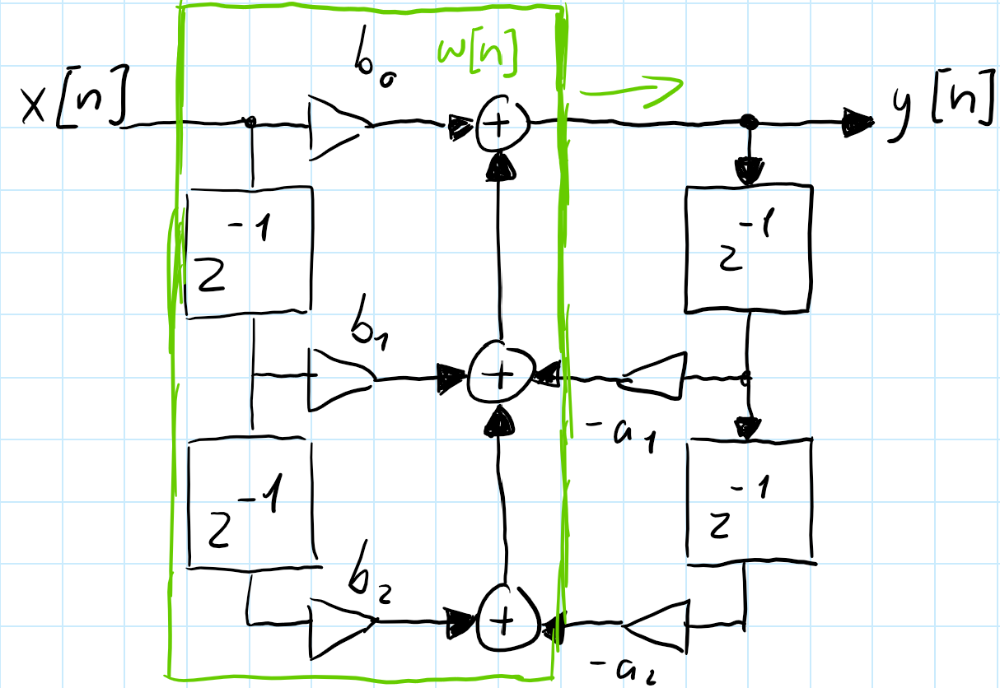
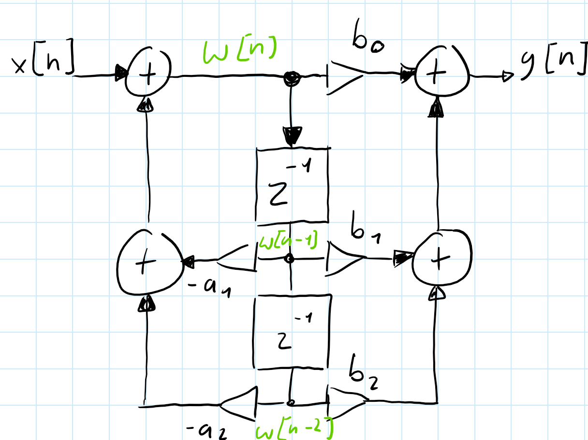
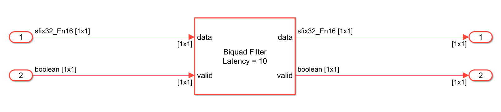
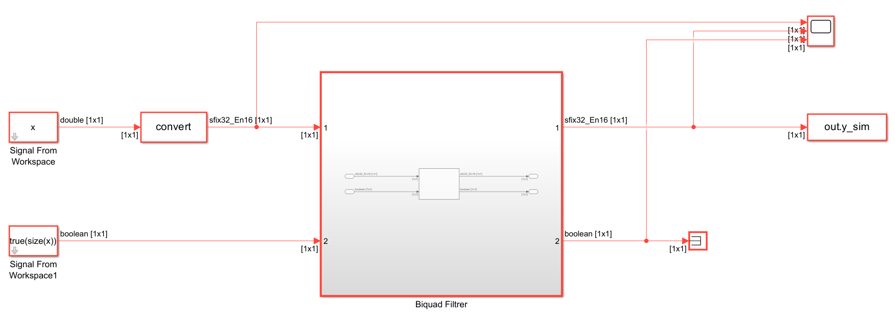
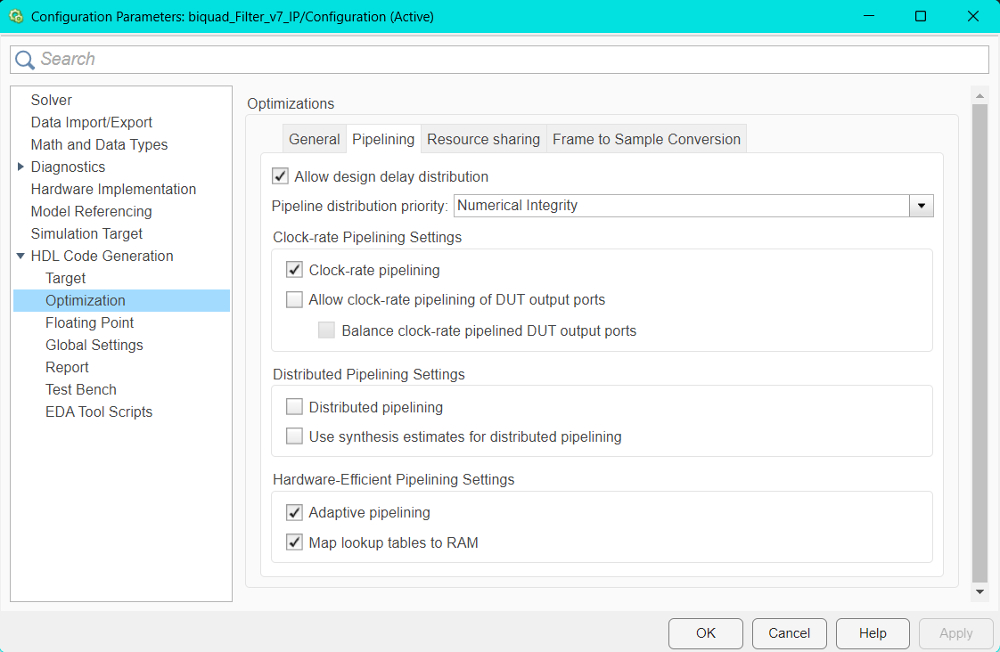
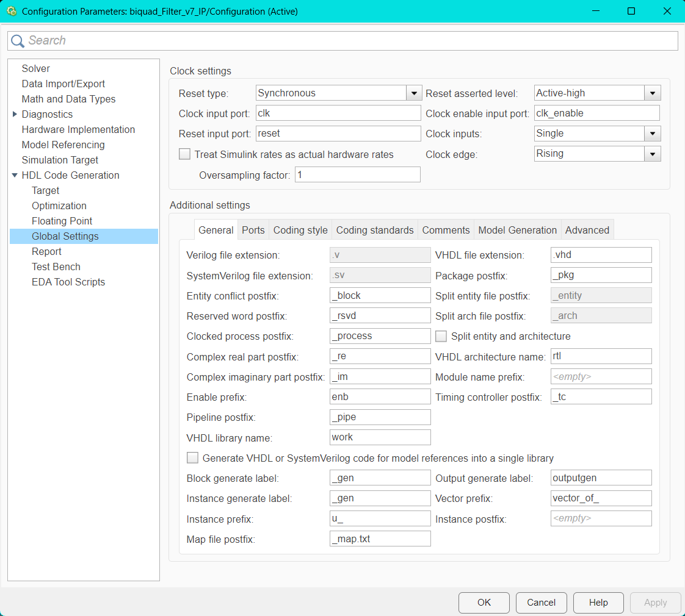
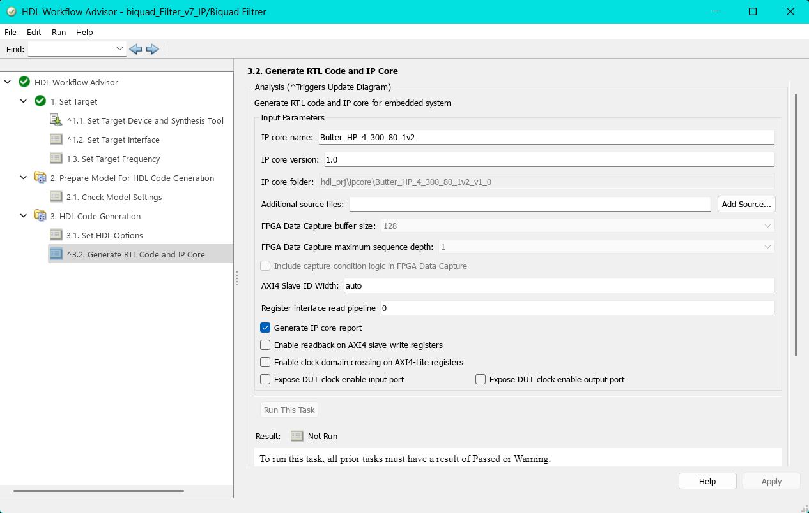
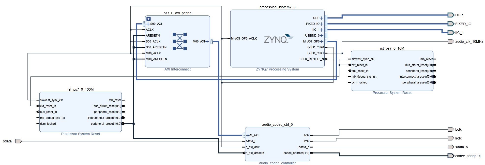
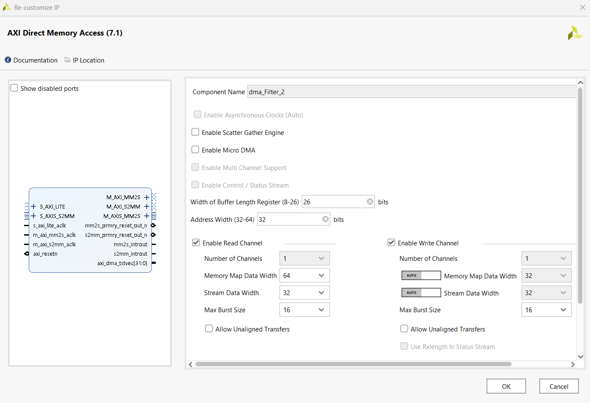
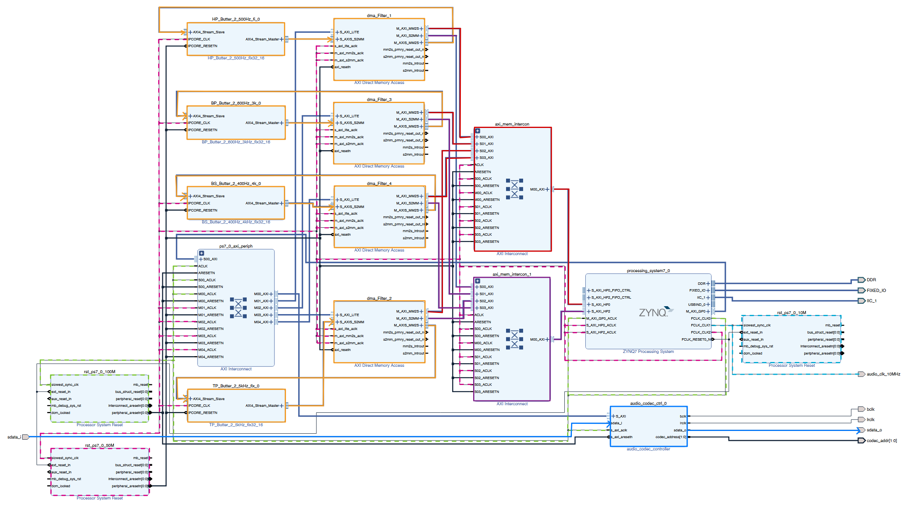

3 Biquads: Digitale Filter auf dem Pynq-Z2 als Lehrdemonstration
4 Einführung
Diese Bachlorthesis dient als eine Lerndemonstration zur Implentierung von digitalen biquadratischen-Filtern auf Mikrocontrollern sowie FPGAs. Im Umfang dieser Lerndemonstration werden digitale Biquad-Filter mithilfe von Matlab- und Pythontools entworfen und im Anschluss auf Hard und Software umgesetzt. Der Prozess der Umsetzung wird zum Verständis dokumentiert sowie genau erklärt, damit Leser dieser Lerndemonstration mithilfe ihrer Hardware für sich den Prozess reproduzieren können.
5 Theoretische Grundlagen
5.1 Infinite Impulse Response (IIR-Filter)
Infinite Impulse Response (IIR) Filter gehören in der Signalverarbeitung zu den grundlegenden Typen der digitalen Filter. IIR-Filter zeichnen sich fundamental durch ihre Charakteristik aus, bei der Berechnung des aktuellen Ausgangswertes durch die Verwendung des gegenwärtigen und vergangenen Eingabewertes als auch des vorherigen Ausgabewertes. Aufgrund dieser Rückkopplung kann es dazu führen, dass die Impulsantwort von IIR-Filtern theoretisch unendlich lang andauern kann, was sie grundsätzlich von Finite Impulse Response (FIR) Filtern unterscheidet.
Die theoretischen Grundlagen von IIR-Filtern basieren auf der Tatsache, dass die Filter sowohl Nullstellen als auch Polstellen besitzen. Während FIR-Filter ausschließlich Nullstellen aufweisen, ermöglichen die Polstellen von IIR-Filtern eine effizientere Umsetzung bestimmter Filtereigenschaften. Dies führt zu dem Hauptvorteil von IIR-Filter für die Möglichkeit scharfe Übergänge im Frequenzgang mit relativ wenigen Koeffizienten zu erreichen.
Ein immenser Vorteil von IIR-Filtern liegt in der hohen Effizienz bei der Realisierung scharfer Frequenzgänge mit relativ wenigen Koeffizienten, während FIR-Filter für vergleichbare Filtereigenschaften oft hunderte von Koeffizienten benötigen, können IIR-Filter ähnliche Ergebnisse mit deutlich geringerem Rechenaufwand erreichen. Aufgrund dieser Eigenschaft eignen sich IIR-Filter besonders gut im Einsatz von Systemen mit beschränkten Ressourcen oder in Echtzeitverarbeitung.
Biquadratische Filter, kurz als “Biquad” bezeichnet, sind eine spezielle Unterklasse von IIR-Filtern zweiter Ordnung. Durch das Kaskadieren solcher Biquad-Sektionen besteht die Möglichkeit komplexe IIR-Filter höherer Ordnung auf einfache Weise zu realisieren. Das Kaskadieren dieser Sektionen bringt Vorteile in Bezug auf numerische Stabilität, Flexibilät bei der Parameteranpassung und Modularität des Designs.
Die Verwendung von Biquad-Sektionen anstelle von Filtern höherer Ordnung in direkter Form bietet eine Vielzahl von Vorteilen. Die Anfälligkeit für Koeffizientenquantisierung wird enorm gemindert, da die Pole und Nullstellen weniger stark von kleinen Änderungen der Koeffizienten abhängen. Im Weiteren ermöglicht die modulare Struktur eine unabhängige Optimierung jeder Sektion, wodurch der Entwurfsprozess vereinfacht wird.
5.2 Differenzengleichung eines IIR-Filters zweiter Ordnung
Digitale Filter können mit einer linearen Differenzengleichung beschrieben werden. Die biquadratischen Filter werden mit der Differenzengleichung eines IIR-Filters zweiter Ordnung beschrieben werden:
\[ y[n] = \frac{1}{a_0}(b_0 \cdot x[n] + b_1 \cdot x[n - 1] + b_2 \cdot x[n - 2] - a_1 \cdot y[n - 1] - a_2 \cdot y[n - 2]) \]
Der Wert \(y[n]\) bezeichnet den Ausgabewert zum Sample \(n\), während \(x[n]\) den Eingangswert darstellt. Der aktuelle Ausgabewert \(y[n]\) ergibt sich aus der gewichteten Summe der aktuellen und zwei vergangenen Eingabewerte, subtrahiert mit den zwei gewichteten vergangen Ausgabewerte.
Die Koeffizienten \(b_0\), \(b_1\) und \(b_2\) bestimmen den Einfluss des aktuellen und der vergangenen Eingabewerte (Feedforward), während \(a_1\) und \(a_2\) den Rückkopplungsanteil aus früheren Ausgabewerten (Feedback) modellieren. Im Allgemeinem wird der Koeffizient auf \(a_0\) auf 1 normiert, was zu der vereinfachten Form führt:
\[ y[n] = b_0 \cdot x[n] + b_1 \cdot x[n - 1] + b_2 \cdot x[n - 2] - a_1 \cdot y[n - 1] - a_2 \cdot y[n - 2] \]
Durch diese Normierung wird die praktische Implementierung vereinfacht, da ein Multiplikationsschritt entfällt.
5.3 Übertragungsfunktion eines IIR-Filters zweiter Ordnung
Zur Analyse des Frequenz- und Phasenverhaltens des Filters, wird die Differenzengleichung mittels der z-Transformation in den z-Bereich transformiert und daraus folgt die resultierende Übertragungsfunktion:
\[ H(z) = \frac{Y(z)}{X(z)} = \frac{b_0 + b_1 z^{-1} + b_2 z^{-2}}{1 + a_1 z^{-1} + a_2 z^{-2}} \]
Die rationale Funktion eines biquadratischen Filters beschreibt das Verhältnis zwischen dem Ausgang \(Y(z)\) zu dem Eingang \(X(z)\). Diese Gleichung stellt die normierte Form des Biquads dar, bei welcher der Nennerkoeffizient auf \(a_0 = 1\) normiert ist. Für den Fall, dass \(a_0 ≠ 1\) beträgt müssen die Koeffizienten durch \(a_0\) geteilt werden, um die Normalform zu erreichen.
Anhand der Übetragungsfunktion können die Pol- und Nullstellen des Filters analysiert werden, um die Stabilität des Biquad-Filters zu vergewissern. Dabei müssen alle Polstellen des Filters innerhalb des Einheitskreises der z-Ebene liegen, beziehungsweise der Betrag jedes Pols kleiner als 1 sein muss.
Befinden sich Pole außerhalb oder direkt auf dem Einheitskreis, kann es dazu kommen, dass das Ausgangssignal unkontrolliert schwingt und das System damit instabil wird. Nullstellen haben hingegen lediglich Einfluss auf die Frequenzcharakteristik und nicht direkt auf die Stabilität.
5.4 Stabilität und Pol-Nullstellen-Verteilung
Die Stabilität eines IIR-Filters ist ein kritischer Faktor, wechler für die Implementierung des Filters gegeben sein muss. Ein kausaler IIR-Filter ist genau dann stabil, wenn alle Polstellen seiner Übertragungsfunktion innerhalb des Einheitskreises der komplexen z-Ebene liegen. Mathematisch ausgedrückt muss für alle Polstellen \(|p_i| < 1\).
Die Lage der Pole bestimmt nicht nur die Stäbilität, sondern auch das dynamische Verhalten des Filters. Pole die näher am Rand des Einheitskreises liegen führen zu einem resonanten Verhalten mit langen ausschwingendem Verhalten, während Pole näher zum Ursprung hin, ein gedämpfteres Verhalten bewirken. Die Nullstellen hingegen beeinflussen primär dern Verlauf des Frequenzgangs.
Für die praktische Implementierung ist es wichtig zu beachten, dass Quantisierungseffekte sich auf die Lage der Pole auswirken können. Das kann im schlimmsten Fall dazu führen, sodass die Stabilität des Filters beeinträchtigt und der Filter instabil wird. Aus diesem Grund ist bei der Koeffizientenquantisierung besondere Vorsicht geboten, bei Filtern mit Polen nah oder auf dem Rand des Einheitskreises.
5.5 Frequenzgang und Phasenverhalten
Die Frequenzgang eines IIR-Filters wird durch die Auswertung der Übertragungsfunktion innerhalb des Einheitskreises erhalten, dafür wird die Substitution \(z = e^{j\omega}\) durchgeführt:
\[ H(e^{j\omega}) = \frac{b_0 + b_1 e^{-j\omega} + b_2 e^{-2j\omega}}{1 + a_1 e^{-j\omega} + a_2 e^{-j2\omega}} \]
Der Betrag \(|H(e^{j\omega})|\) beschreibt die Amplitudencharakteristik, während die Phase \(\arg(H(e^{j\omega}))\) das Phasenverhalten wiedergibt. Bei IIR-Filtern ist das Phasenverhalten im Allgemeinen nicht linear, was in manchen Anwendungen als unerwünscht erweist.
6 Implementierungsstrukturen biquadratischer Filter
Die praktische Implementierung von biquadratischen Filtern erfolgt durch die direkte Umsetzung der Differezengleichungen in Software oder Hardware.
Dafür werden die verzögerten Eingangswerte \(x[n-1]\) und \(x[n-2]\), sowie die Ausgangswerte \(y[n-1]\) und \(y[n-2]\) in Speicherelementen, sogenannten Verzögerungsgliedern, gespeichert. Der aktuelle Ausgangswert \(y[n]\) wird mittels der gewichteten Summation aller Terme gemäß der jeweiligen Differenzengleichung berechnet.
Bei der numerischen Implementierung sind verschiedene Aspekte zu berücksichtigen, insbesondere die Wortbreite und des Zahlenformats (Festkomma oder Gleitkomma).
Weitere Einflüsse wie Rundungsfehler oder Quantisierungsrauschen können die Filtercharakteristik beeinflussen und im Extremfall die Stabilität des Filters gefährden.
Diese Implementierungsstrukturen bieten die Möglichkeit, mehrere Filter-Sektionen aneinander zu Verbinden. Diese Modularität biquadratischer Filter ermöglicht, komplexere Filtersysteme höherer Ordnung, durch die Kaskadierung mehrerer Biquad-Sektionen zu realisieren.
Dadurch können Vorteile in Bezug auf numerische Stabilität, Designflexibilität und Implementierungseffizienz geschaffen werden, weil jede Sektion unabhängig entworfen und optimiert werden kann.
6.1 Direktform 1
Die Direktform 1 stellt die direkteste Umsetzung der biquadratischen Differenzengleichung in einer Signalflussstruktur dar.
Diese Implementierung folgt direkt der mathematischen Beschreibung unter der Verwendung separater Verzögerungsketten für die Eingangs- als auch die Ausgangswerte.
Diese Struktur kann als eine Parallelschaltung eines rein rekursiven Teils (nur Pole) und eines nicht rekursiven Teils (nur Nullstellen) aufgefasst werden.
\[ y[n] = b_0 \cdot x[n] + b_1 \cdot x[n - 1] + b_2 \cdot x[n - 2] - a_1 \cdot y[n - 1] - a_2 \cdot y[n - 2] \]
Für die Direktform 1 Implementierung werden zunächst alle gewichteten Eingangswerte und deren Verzögerungen zusammengefasst und berechnet:
\[ w[n] = b_0 \cdot x[n] + b_1 \cdot x[n - 1] + b_2 \cdot x[n - 2] \]
Anschließend wird die Rückkoppling der verzögerten Ausgangswerte realisiert: \[ y[n] = w[n] - a_1 \cdot y[n-1] - a_2 \cdot y[n-2] \]

In dieser Struktur werden vier Verzögerungselemente verwendet: zwei für die Eingangsverzögerung, \(x[n-1]\) und \(x[n-2]\), sowie zwei für die Ausgangsverzögerung, \(y[n-1]\) und \(y[n-2]\). Die Multiplikationen zwischen den Verzögerungselementen und den Koeffizienten erfolgen parallel, wodurch sich eine hohe Verarbeitungsgeschwindigkeit erzielen lässt.
Ein wesentlicher Vorteil der Direktform 1 liegt in ihrer Robustheit gegenüber Koeffizientenquantisierung. Da die Feedforward- und Feedback-Pfade getrennt sind, beeinflussen Quantisierungsfehler in einem Pfad nicht direkt den anderen. Dies führt zu einer besseren numerischen Stabilität, besonders bei der Verwendung von Festkomma-Arithmetik.
Die Direktform 1 zeichnet sich durch ihre konzeptionelle Einfachheit und die direkte Korrespondenz zur Differenzengleichung aus. Nachteilhaft bei dieser Struktur ist der erhöhte Speicherbedarf, aufgrund der redundanten Verzögerungselemente. Für Anwendungen mit strengen Speicherbeschränkungen kann dies ein limitierender Faktor sein.
6.2 Direktform 2 (Kanonische Form)
Die Direktform 2, oder auch als kanonische Form bekannt, ist eine optimierte Variante der Direktform 1, welche durch die Umordnung der Operationen die Anzahl der benötigten Verzögerungselemente minimiert.
Diese Struktur macht sich die Kommutativität (Vertauschbarkeit) linearer zeitinvarianter (LTI)-Systeme zunutze, indem sie die Reihenfolge von der Vorwärts- und Rückwärtsverarbeitung vertauscht.

Zunächst wird ein Zwischenwert \(w[n]\) durch die rekursive Beziehungen erzeugt:
\[ w[n] = x[n] - a_1 \cdot w[n-1] - a_2 \cdot w[n-2] \]
Der Zwischenwert \(w[n]\) dient als Substitution für die Verzögerungselemente der Ein- und Ausgangswerte.
\[ y[n] = b_0 \cdot w[n] + b_1 \cdot w[n-1] + b_2 \cdot w[n-2] \]
In dieser Struktur werden nur zwei Verzögerungselemente für w[n-1] und w[n-2] benötigt, da die rekursive als auch die nicht-rekursive Verarbeitung auf dieselben verzögerten Werte zugreifen. Die Bezeichnung “kanonisch” bezieht sich darauf, dass diese Implementierung die minimal mögliche Anzahl von Verzögerungselementen verwendet und dadurch die Speichereffizienz optimiert.
Die Direktform 2 eignet sich Ideal für Systeme mit begrenzten Speicherressourcen. Der reduzierte Speicherbedarf ist insbesondere bei der Implementierung auf Mikrocontrollern oder in FPGA-Anwendungen von hohem Vorteil, bei welchen Speicher eine limitierte und kostbare Ressource darstellt.
Jedoch weist diese Struktur eine erhöhte Anfälligkeit gegenüber Quantisierungseffekten auf, da die Zwischenwerte \(w[n]\) größere Dynamikbereiche aufweisen können als die ursprünglichen Ein- und Ausgangswerte. Dies kann zu einer Verschlechterung des Signal-Rausch-Verhältnisses führen, primär bei der Verwendung von Festkomma-Arithmetik mit begrenzter Wortbreite.
6.3 Transponierte Direktform 2:
Die transponierte Direktform 2 kann gebildet werden durch die Anwendung des Transpositionstheorems auf die Direktform 2. Dieses Theorem besagt, dass die Umkehrung aller Signalflussrichtungen bei gleichzeitiger Vertauschung von Eingängen und Ausgängen eine äquivalente Übertragungsfunktion ergibt. Die resultierende Struktur weist oft günstigere numerische Eigenschaften auf, als die ursprüngliche Form.

Die transponierte Direktform 2 wird druch die folgende Differenzengleichungen beschrieben:
\[ s_2[n] = b_2 \cdot x[n] - a_2 \cdot y[n] \]
\[ s_1[n] = s_2[n] + b_1 \cdot x[n] - a_1 \cdot y[n] \]
\[ y[n] = s_1[n] + b_0 \cdot x[n] \]
Bei der transponierten Direktform 2 werden die Zwischenwerte \(s_1[n]\) und \(s_2[n]\) als Verzögerungselemente verwendet. Diese Struktur eignet sich besonders gut in der Implementierung von Echtzeitanwendung, aufgrund ihrer effizienten Berechnung und der guten Eignung für parallele oder pipelined Hardware-Architekturen.
Ein wesentlicher Vorteil der transponierten Direktform 2 liegt in ihrer reduzierten Anfälligkeit gegenüber Koeffizientenquantisierung. Die Rückkopplungsschleifen sind kürzer als in der Direktform 2, was zu einer verbesserten numerischen Stabilität führt. Darüber hinaus ist die Struktur besonders gut für die Implementierung in Hardware geeignet, da die Berechnungen eine natürliche Pipeline-Struktur ausweisen.
7 Numerische Aspekte und Quantisierungseffekte
Die praktische Implementierung digitaler Filter auf Systemen mit endlicher Wortlänge bringt verschiedene Herausforderungen mit sich. Diese Effekte können die Filterleistung erheblich beeinträchtigen und müssen bereits in beim Entwerfen berücksichtigt werden. Die wichtigsten numerischen Aspekte sind Koeffizientenquantisierung, Quantisierungsrauschen(Rundungsrauschen) und nichtlineare Quantisierungseffekte.
7.1 Koeffizientenquantisierung
Die Koeffizientenquantisierung ist einer der kritischen Aspekte bei der Implementierung digitaler Filter auf Systemen mit begrenzter Wortlänge. Bei der Darstellung der Filterkoeffizienten mit einer endlichen Anzahl von Bits entstehen Quantisierungsfehler, die zu einer Verschiebung der Pole und Nullstellen des Filters führen kann.
Auswirkung der Koeffizientenquantisierung
Die Quantisierung der Koeffizienten führt zu verschiedenen unerwünschten Effekten:
Polverschiebung: Die quantisierten Koeffizienten verschieben die Pole des Filters, was zu einer Änderung der Filtercharakteristik führt. Im schlimmsten Fall können die Pole aus dem Einheitskreis herauswandern und zu einem instabilen Filter führen.
Frequenzgangverzerrung: Die Verschiebung der Pole und Nullstellen führt zur Abweichung im Frequenzgang. Besonders kritisch ist dies bei scharfen Filtern mit hoher Güte.
Stabilitätsverlust: Pole am oder auf dem Rand des Einheitskreises kann bereits durch kleine Quantisierung zur Instabilität führen. Die Wahrscheinlichkeit der Instabilität steigt mit abnehmender Wortlänge.
Strukturelle Gegenmaßnahmen
Die Wahl der Filterstruktur hat einen wesentlichen Einfluss auf die Robustheit gegenüber Quantisierungseffekten. Die Direktform 1 ist aufgrund der getrennten Pfade für Feedforward- und Feedbackanteile weniger anfällig für Fehlerausbreitung und bietet bessere numerische Stabilität bei Festkomma-Arithmetik. Die Direktform 2 bietet gegenüber der Direktform 1 eine bessere Speichereffizienz, jedoch können größere Zwischenwerte zum Überlaufen bei begrenzter Wortbreite mit erhöhtem Rauschen führen.
Die transponierte Direktform 2 kombiniert die Vorteile der beiden genannten Strukturen und zeichnet sich durch eine besonders hohe Resistenz gegenüber Koeffizientenquantisierung aus. Dies liegt an der kürzeren Rückkopplungskette und der numerisch günstigen Struktur für Echtzeitanwendungen. Bei der Implementierung der digitalen Filter ist es zu empfehlen eine Wortlänge von mindestens 16 Bit mit enger Bandbreite zu wählen, um Koeffizientenquantisierung bei einem Minimum zu halten.
7.2 Quantisierungsrauschen (Rundungsrauschen)
Bei der Implementierung digitaler Filter entstehen bei jeder arithmetischen Operation Rundungsfehler, die sich als additives Rauschen am Filterausgang manifestieren. Diese Fehler sind unvermeidlich bei der Verwendung von Festkomma-Arithmetik und können das Signal-Rausch-Verhältnis des Filters erheblich verschlechtern. Um diesem Entgegen zu wirken, kann die durch die Wahl einer geeigneten Implementierungsstruktur das Rundungsrauschen minimiert werden.
Direktform 1: Die Rundungsrauschquellen in den Feedforward- und Feedback-Pfaden sind weitgehend entkoppelt. Dadurch führt es zu einer moderaten Gesamtvarianz des Rundungsrauschens.
Direktform 2: Die gemeinsame Nutzung der Verzögerungselemente führt zu einer höheren Rundsrauschvarianz, da die Rundungsfehler mehrfach durch das rekursive System zirkulieren.
Transponierte Direktform 2: Diese Struktur weist das günstigste Rundungsrauschen auf, da die Rundungsrauschquellen näher am Ausgang liegen und weniger stark gefiltert werden.
7.3 Limit-Cycle-Oszilationen
Limit-Cycle-Oszillationen sind selbsterhaltende Schwingungen, die in nichtlinearen digitalen Filtern auftreten können. Sie entstehen durch die Kombination von Quantisierung und Rückkopplung und können auch bei stabilen linearen Filtern auftreten, wenn nichtlineare Quantisierungseffekte berücksichtigt werden.
Zero-Input Limit Cycles sind Oszillationen die auftreten, wenn das Eingangssignal null entspricht, aber der Filter aufgrund gespeicherter Energie in den Verzögerungselementen weiterhin schwingt.
Large-Scale Limit können bei hohen Eingangssignalpegeln auftreten und sind nicht auf kleine Amplituden beschränkt. Sie entstehen durch die Sättigungscharakteristik der Arithmetik und können zu großen, störenden Ausgangssignalen führen.
7.4 Kaskadierung
Für Filter höherer Ordnung bietet die kaskadierte-Realisierung aus Biquad-Sektionen deutliche Vorteile gegenüber der direkten Implementierung. Die optimale Anordnung und Paarung der Pole und Nullstellen in einzelnen Sektionen kann die numerische Stabilität verbessern, sowie das Rundungsrauschen minimieren als auch die Anfälligkeit für Koeffizientenquantisierung reduzieren.
7.5 Strukturenvergleich
| Eigenschaft | Direktform 1 | Direktform 2 | Transp. Direktform 2 |
|---|---|---|---|
| Verzögerungselemente | 4 | 2 | 2 |
| Speicherbedarf | Hoch | Minimal | Minimal |
| Koeff.-Empfindlichkeit | Niedrig | Hoch | Mittel |
| Rundungsrauschen | Mittel | Hoch | Niedrig |
| Limit-Cycle-Anfälligkeit | Niedrig | Hoch | Niedrig |
| Hardware-Eignung | Gut | Mittel | Sehr gut |
| Dynamikbereich | Gut | Begrenzt | Sehr gut |
| Quantisierungsrobustheit | Hoch | Niedrig | Mittel |
Rundungsrauschverhalten: Die transponierte Direktform 2 weist das günstigste Rundungsrauschverhalten auf, da die Rundungsquellen näher am Ausgang liegen und weniger stark durch die Rückkopplung verstärkt werden. Die Direktform 2 zeigt das ungünstigste Verhalten, da die Rundungsfehler durch die rekursive Struktur mehrfach zirkulieren.
Koeffizientenempfindlichkeit: Die Direktform 1 bietet die beste Robustheit gegenüber Koeffizientenquantisierung, da die Feedforward- und Feedback-Koeffizienten unabhängig quantisiert werden können. Die Direktform 2 zeigt die höchste Empfindlichkeit aufgrund der gekoppelten Struktur.
Die Wahl der optimalen Struktur hängt von den spezifischen Anforderungen der Anwendung ab. Für Anwendungen mit strengen Speicherbeschränkungen sind die Direktform 2 und transponierte Direktform 2 vorzuziehen. Bei hohen Anforderungen an die numerische Genauigkeit und Robustheit ist die transponierte Direktform 2 oder die Direktform 1 die bessere Wahl. Für Echtzeitanwendungen eignet sich die transponierte Direktform 2 besonders gut aufgrund ihrer speicher- und rechen Zeiteffizienz sowie ihrer numerischen Stabilität.
8 Bilineartransformation
Die Bilineartransformation dient als ein Verfahren, welches die Überführung analoger kontinuerierlicher Filter in digitale Filterstrukturen ermöglicht. Bei diesem Verfahren wird das analoge Frequenzverhalten möglichst genau in den digitalen Frequenzbereich übertragen und bietet dabei die Erhaltung der Stabilität sowie eine bijektive, aliasfreie Abbildung der s-Parameter in den z-Bereich. Sei überführt die imaginäre Achse der s-Ebene (\(j\omega\)) exakt auf den Einheitskreis der z-Ebene und erhält dabei die Stabilitätsbedingungen.
8.1 Zentrale Substitions
Die mathematische Basis der Bilineartransformation beruht auf einer Substitution der s Parameter: \[ s = \frac{2}{T_d} \cdot \frac{1 - z^{-1}}{1 + z^{-1}} \]
Dabei ist \(T_d\) ein Entwurfsparameter mit Zeitcharakteristik, der in der Praxis überlicherweise mit der Abtastperiode \(T\) geleichgesetzt wird. Durch dieses nichtlineare Transformation werden rationale Funktionen im s-Bereich in rationale Funktionen im z-Bereich abgebildet, ohne dass die Orndung der Übertragungsfunktionen ansteigt.
8.2 Transformation der Übergangsfunktion
Zur Digitalisierung eines analogen Filters mit der Übertragungsfunktion \(H_c(s)\) wird die Subtitution in die analoge Übertragungsfunktion eingesetzt. Dieser Prozess führt zur digitalen Übertragungsfunktion:
\[ H(z) = H_c\left( \frac{2}{T_d} \cdot \frac{1 - z^{-1}}{1 + z^{-1}} \right) \]
Die resultierende Übertragungsfunktion \(H(z)\) repräsentiert die vollständige digitale Überführung des ursprünglichen analogen Filters, wobei alle wesentlichen Filtereigenschaften erhalten bleiben.
8.3 Transformation von Polen und Nullstellen
Die Pol- und Nullstellen des analogen Filters unterliegen während der Transformation spezifischen Abbildungsregeln. Für eine analoge Nullstelle \(\zeta_k\) und einen analogen Pol \(s_k\) ergeben sich die entsprechenden digitalen Werte:
\[ z_k = \frac{1 + \frac{T_d}{2} \cdot \zeta_k}{1 - \frac{T_d}{2} \cdot \zeta_k}, \quad p_k = \frac{1 + \frac{T_d}{2} \cdot s_k}{1 - \frac{T_d}{2} \cdot s_k} \]
Diese Transformationsregeln gewährleisten, dass die fundamentalen Eigenschaften des Filters während der Digitalierung erhalten bleiben. Insbesondere stellt die Transformation sicher, dass die linke s-Halbebene, welche alle stabilen Pole enthält, vollständig in das Innere des Einheitskreises der z-Ebene abgebildet werden kann.
8.4 Frequenzverzerrung - Frequency Warping:
Ein wesentlicher und unvermeidlciher Aspekt der Bilineartransformation ist die nichtlineare Abbildung der Frequenzachse, bekannt als Frequenzverzerrung oder Frequency Warping. Die mathematische Beschreibung der Frequenzformation lautet:
\[ \omega = 2 \cdot \tan^{-1} \left( \frac{\Omega T_d}{2} \right), \quad \Omega = \frac{2}{T_d} \cdot \tan\left( \frac{\omega}{2} \right) \]
Durch die Frequenzverzerrung kann das Verhalten digitaler Filter beeinflusst werden. Bei niedrigen Frequenzen, nahe \(\omega\) = 0 oder 0 Hz, ist die Verzerrung minimal und nahezu vernachlässigbar. In diesem Bereich verhalten sich digitale und analoge Filter nahezu identisch. Mit steigender Frequenz nimmt die Verzerrung progressiv zu und erreicht ihr Maximum bei Frequenzen nahe der Nyquist-Frequenz \(\omega = \pi\) oder der halben Abtastrate \(\frac{f_s}{2}\)
8.5 Prewarping
Um die Abweichungen die durch das Frequency Warping entstehen zu kompensieren, wird die Methode des Prewarpings genutzt. Dabei wird die analoge Designfrequenz \(\Omega_k\) so angepasst, dass sie nach der Bilineartransformation genau der genwünschten digitalen Frequenz \(\omega_k\) entspricht:
\[ \Omega_k = \frac{2}{T_d} \cdot \tan\left( \frac{\omega_k}{2} \right) = 2 \cdot f_s \cdot \tan(\frac{\pi f_d}{f_s}) \]
In der praktischen Anwendung wird Prewarping typischerweise für Eckfrequenzpunkte eingesetzt. Dazu gehören Grenzfrequenzen von Tief- und Hochpassfiltern, Mittenfrequenzen von Bandpassfiltern, sowie Punkte der -3dB-Frequenzen oder Grenzen von Sperrbereichen. Durch die Anwendung des Prewarpings auf diese gezielten Punkte kann sichergestellt werden, dass der digitale Filter an den spezifizierten Frequenzen das gewünschte Verhalten aufweist.
Prewarping ist jedoch nicht zwingend notwendig, wenn die Abtastastrate \(f_s\) höher als die Eckfrequenzen \(f_d\) der Filter gewählt wird. Dadurch wird die Abbildung durch die Bilineartransformation nahezu linear und die Frequenzverzerrung ist vernachlässigbar gering.
9 Filterentwurf in Matlab
In MATLAB wird der Entwurf digitaler IIR-Filter mit einer Vielzahl von Werkzeugen unterstützt, die sowohl den Entwurf als auch die Analyse und Implementierung erleichtern. Grundlage ist dabei das Prinzip, einen analogen Prototypfilter mittels Bilineartransformation in den digitalen Bereich zu überführen. Dieses Verfahren wird für gängige Filtertypen wie Butterworth-, Chebyshev- und elliptische Filter eingesetzt. Die Funktionen butter, cheby1, cheby2 und ellip wenden genau dieses Prinzip an. Die Vorgehensweise entspricht dabei der Filterentwicklung in Python mit der Scipy-Bibliothek.
Die direkte Umsetzung von IIR-Filtern mit Polynomkoeffizienten (b, a) kann bereits bei vergleichsweise niedrigen Ordnungen zu numerischen Instabilitäten führen. Ursache dafür sind Rundungsfehler, die durch die direkte Multiplikation aller Pole und Nullstellen im Übertragungsfunktionspolynom entstehen und dazu führen können, dass Pole außerhalb des Einheitskreises liegen. Dies beeinträchtigt die Stabilität und kann die Filterfunktion erheblich verfälschen.
Um solche Instabilitäten zu vermeiden, werden IIR-Filter in der Praxis nicht als ein einziges großes Polynom, sondern als Produkt mehrerer einfacher biquadratischer Übertragungsfunktionen (Biquads) umgesetzt. Biquads sind IIR-Filterblöcke zweiter Ordnung, mit denen sich Filter höherer Ordnung durch Zerlegung und Kaskadierung in mehreren Sektionen stabil realisieren lassen. Diese Aufteilung begrenzt Rundungsfehler lokal und verbessert die Gesamtstabilität des Filters. Dies ist insbesondere bei der Umsetzung auf Hardwareplattformen wie FPGAs oder Mikrocontrollern von Vorteil.
MATLAB unterstützt dieses Vorgehen durch die Arbeit mit Second-Order Sections (SOS). Die SOS-Darstellung wird als Matrix gespeichert, bei der jede Zeile die Zähler- und Nennerkoeffizienten einer Biquad-Sektion enthält. Zusätzlich wird ein separater Verstärkungsfaktor (Gain) ausgegeben, um den Frequenzgang korrekt zu skalieren. Die Entwurfsfunktionen können die Filterkoeffizienten direkt in SOS-Form bereitstellen, was die stabile Realisierung erleichtert. Alternativ lassen sich vorhandene Übertragungsfunktionen mit tf2sos in eine Biquad-Kaskade umwandeln. So wird sichergestellt, dass IIR-Filter auch bei höheren Ordnungen numerisch zuverlässig umgesetzt werden können.
Der Entwurfsprozess in MATLAB folgt dabei einem klaren Ablauf. Zunächst werden die Anforderungen festgelegt, wie Filtertyp, Filterordnung, Grenzfrequenzen und gegebenenfalls erlaubten Ripple im Durchlass- oder Sperrbereich. Die Grenzfrequenzen werden normiert auf die halbe Abtastrate (Nyquist-Frequenz) angegeben und müssen im Bereich von 0 bis 1 liegen. Bei Bandpass- und Bandsperrfiltern wird eine Frequenztransformation des Tiefpass-Prototyps durchgeführt, wodurch sich die Filterordnung mathematisch verdoppelt. Diese Verdoppelung muss bei der Wahl der Prototyp-Ordnung in Skripten berücksichtigt werden, da die Entwurfsfunktionen dies nicht automatisch anpassen. Wird der Filter hingegen mit dem Filter Designer erstellt, wird die Gesamtordnung für Bandpass- und Bandsperrfilter automatisch korrekt umgesetzt.
Neben der rein skriptbasierten Arbeitsweise können Filter alternativ auch interaktiv mit dem Filter Designer erstellt werden, der eine grafische Oberfläche für die Spezifikation der Filterparameter sowie die Visualisierung von Frequenzgängen und Pol-Nullstellen-Diagrammen bietet. Nach dem Entwurf lassen sich die berechneten Filterkoeffizienten sowohl als Polynomkoeffizienten (b, a) als auch direkt in SOS-Form ausgeben. Die SOS-Zerlegung stellt sicher, dass Filter auch bei hohen Ordnungen stabil und numerisch robust umgesetzt werden können. Die Kaskadierung in Biquads bezieht sich dabei stets auf die tatsächlich resultierende Gesamtordnung, einschließlich der Verdoppelung bei Bandpass- oder Bandsperrfiltern.
Für die Analyse stehen Funktionen wie freqz zur Darstellung von Amplituden- und Phasengang oder das umfassende Filter Visualization Tool (fvtool) zur Verfügung. Letzteres erlaubt eine detaillierte Untersuchung des Frequenzverhaltens, der Impulsantwort, der Gruppenlaufzeit sowie der Pole und Nullstellen des entworfenen Filters.
Nach dem Entwurf können die berechneten Filterkoeffizienten direkt zur Verarbeitung digitaler Signale eingesetzt oder für den Hardwareeinsatz exportiert werden. Die Übergabe in Biquad-Form ist hierbei besonders praxisnah, da Plattformen wie Simulink die Kaskadierung von SOS-Sektionen effizient unterstützen.
9.1 Spezifikation der Filter
Für die Demonstration wurde entschieden, alle vier grundlegenden Filtertypen als Butterworth-Filter zu realisieren. Diese besitzen den Vorteil kein Ripple im Durchlass- und Sperrbereich aufzuweisen. Gerade bei der Verarbeitung von Audiosignalen können Ripple im Frequenzgang zu unerwünschten Artefakten führen. Ein möglichst glatter Amplitudenverlauf ist daher insbesondere in der Audioanwendung vom Vorteil.
Im direkten Vergleich zu elliptischen oder Chebyshev-Filtern weisen Butterworth-Filter bei gleicher Flankensteilheit eine höhere erforderliche Filterordnung auf. Diese höhere Ordnung würde in einer Hardwareumsetzung prinzipiell mehr Biquad-Stufen benötigen und damit mehr Ressourcen. Bei der Implementierung wurde die Filterordnung auf 2. Ordnung beschränkt. Damit reicht für jeden Filter genau eine Biquad-Stufe aus.
Da bei einer so niedrigen Filterordnung alle Filter, unabhängig davon ob sie als Butterworth- oder elliptischer Filter realisiert werden, ohnehin nur aus einer Biquad-Stufe bestehen, hätte die Wahl des Filtertyps keinen nennenswerten Unterschied bei den Hardwareanforderungen gemacht. Der Hauptgrund für die Entscheidung zugunsten der Butterworth-Filter liegt somit vor allem im glatten Frequenzverlauf, der für die Audiobearbeitung besonders geeignet ist.
Bei der genauen Spezifiaktion der Filter wurde sich an dem Beispiel von Design of Digital Audio IIR Filters von Frank Schultz gehalten. Dabei ergaben sich Folgende Spezifikationen:
| Filter: | Typ: | Fc: | Ordnung: |
|---|---|---|---|
| Hochpass | Butterworth | 1kHz | 2 |
| Tiefpass | Butterworth | 1kHz | 2 |
| Bandpass | Butterworth | 500Hz - 2kHz | 2 |
| Bansstop | Butterworth | 500Hz - 2kHz | 2 |
Alle Filter wurden mit dem Filter Designer auf einer Samplefrequenz von 48kHz entforfen und die Koeffizienten als SOS-Matrix inklusive Gain in das Workspace exportiert.
10 Implementierung
Für die Implementierung eines digitalen IIR-Biquad-Filters wurde ein Simulink-Modell entwickelt, das anschließend mit dem HDL Coder automatisch in synthesefähigen HDL-Code übersetzt wird. Ziel ist es, daraus einen Vivado-kompatiblen IP-Core zu erzeugen, der über eine AXI4-Stream-Schnittstelle in ein FPGA-Design eingebunden werden kann. Durch diesen modellbasierten Entwicklungsansatz wird nicht nur die Entwicklungszeit reduziert, sondern auch die Integration vereinfacht.
In der Vivado Design Suite von AMD/Xilinx spielen IP-Cores (Intellectual Property Cores) eine zentrale Rolle. Dabei handelt es sich um wiederverwendbare Hardwaremodule, die sich modular in digitale Systeme einfügen lassen. Für die Implementierung von digitalen Filtern bieten IP-Cores einen Vorteil. Die gesamte Filterlogik kann als in sich geschlossenes Modul gekapselt werden. Dadurch wird die Funktionalität des Filters klar abgegrenzt und lässt sich ohne großen Aufwand mehrfach instanziieren, in Kaskade schalten oder austauschen.
Gerade bei Anwendungen wie dieser ermöglicht der Einsatz von IP-Cores eine klare Trennung zwischen Logikdesign und Systemintegration, was sowohl die Wartung als auch die Wiederverwendbarkeit verbessert. Ein einmal entwickelter Filter-IP kann unkompliziert in andere Designs oder Projekte übernommen und betrieben werden, ohne den zugrunde liegenden HDL-Code erneut anpassen zu müssen.
10.1 Modellierung in Simulink
Für die Umsetzung in Simulink wurde der in der DSP HDL Toolbox enthaltene Block Biquadratic IIR (SOS) filter verwendet. Der Vorteil dieses Blocks gegenüber einer direkten Nachbildung der Direct Form II liegt darin, dass er speziell für die HDL-Codegenerierung optimiert ist. Er bringt bereits eine integrierte Steuerung des valid-Signals mit, was ein notwendiges Element für die AXI-Stream-Implementierung ist. Außerdem sind die Filterstrukturen bereits gepipelined, wodurch der Filter eine höhere maximale Taktfrequenz erreicht.
Die Probleme bei der Umsetzung einer Direct-Form-Struktur lagen hauptsächlich darin, dass bei der Bitstream-Generierung in Vivado die Timing-Anforderungen nicht eingehalten werden konnten und die Taktfrequenz des Filters entsprechend reduziert werden musste. Wird die Taktfrequenz zu niedrig gewählt, verlängert sich die Zeit der Filterung entsprechend.
Hinzu kam, dass ein einzelner Filter in dieser Form relativ viele Ressourcen auf dem FPGA belegte. Eine direkte Nachbildung der Direct Form II ohne korrektes Pipelining und ohne weitere Optimierungen ist sehr ineffizient.
Aus diesem Grund fiel die Entscheidung zugunsten einer vorgefertigten Lösung aus der DSP HDL Toolbox. Trotzdem musste die Taktfrequenz letztlich auf 50 MHz begrenzt werden, da bei 100 MHz ebenfalls keine vollständige Einhaltung der Timings erreicht werden konnte.
10.1.1 Direct Form II Transponiert mit Pipelining
Der Filter-Block wurde auf Direct Form II Transponiert eingestellt, da diese Struktur, genau wie die klassische Direct Form II, nur eine Verzögerungskette benötigt und somit weniger Register erforderlich sind. Die transponierte Form verschiebt die Verzögerungselemente auf die Rückkopplungspfade, wodurch die kritische Pfadlänge verkürzt wird. Gleichzeitig bietet sie Vorteile in Bezug auf die numerische Stabilität und ist robuster gegenüber Quantisierungseffekten.
Ergänzend ist dieser Filterblock schon gepipelined. Beim Pipelining werden innerhalb der Struktur gezielt Register in die kombinatorischen Signalwege eingefügt. Dies trennt lange Logikpfade auf und verkürzt damit die kritische Pfadlänge, was zu einer deutlich höheren maximalen Taktfrequenz führt. Rückkopplungswege, die bei IIR-Filtern eine Herausforderung darstellen, können so auch bei hoher Verarbeitungsgeschwindigkeit stabil betrieben werden.
Gerade in Anwendungen, in denen mehrere Biquads kaskadiert werden, kann so eine stabile und hardwarefreundliche Filterarchitektur aufgebaut werden.
10.1.2 Festkommaarithmetik
Die gesamte Filterlogik basiert auf Festkommaarithmetik, da FPGAs standardmäßig keine native Gleitkomma-Hardware besitzen. Für alle Signalpfade wird der Typ fixdt(1,32,16) eingesetzt, ein vorzeichenbehafteter 32-Bit-Wert mit 16 Nachkommabits. Der Typ wurde sowohl in Simulink als auch in der späteren Hardwareimplementierung experimentell getestet und hat sich dabei als optimal herausgestellt. Er bietet ein gutes Gleichgewicht zwischen Rechengenauigkeit und Ressourceneffizienz, wobei Quantisierungsfehler minimal gehalten werden konnten. Aus diesem Grund wird dieser Datentyp für alle relevanten Signalpfade verwendet.
10.1.3 Modell und Aufbau
Die Numerator- und Denominator-Koeffizienten des Filters werden direkt aus dem MATLAB-Workspace übernommen und stammen aus der vorberechneten SOS-Matrix. Der Gain-Faktor wird in die Numerator-Koeffizienten eingerechnet, um eine stabile Skalierung zu gewährleisten.

Der Filter ist in ein separates Subsystem eingebettet, um die eigentliche Filterlogik klar von zusätzlichen Test- und Steuerungselementen zu trennen. Um den Datentyp durchgängig korrekt zu setzen, wird ein Data Type Conversion-Block vor dem Filter-Subsystem eingefügt. Der Filter selbst ist so eingestellt, dass die Koeffizienten den Datentyp des Eingangssignals übernehmen. Die genauen Einstellungen sehen wie Folgt aus:


Ergänzend enthält das Modell Komponenten zur Test- und Signalanalyse. Dazu gehören Elemente, die Testsignale aus dem Workspace einlesen, ein gültiges AXI-Stream Valid-Signal zur Simulation erzeugen sowie den Datentyp des Eingangssignals über einen Data Type Conversion-Block anpassen, sowie Blöcke zum Zurückschreiben der Ergebnisse ins MATLAB-Workspace.

10.1.4 AXI4-Stream-Schnittstelle
Die Integration der Filterstruktur in ein FPGA-System erfolgt über eine AXI4-Stream-Schnittstelle, die sich durch ihren einfachen und unidirektionalen Datenfluss auszeichnet. Der zugrunde liegende Handshake-Mechanismus basiert auf den Signalen TVALID und TREADY. Ein Transfer erfolgt nur, wenn beide Signale gleichzeitig aktiv sind.
Der Sender (Master) setzt TVALID sobald Daten bereitstehen, und der Empfänger (Slave) signalisiert mit TREADY, dass dieser bereit ist Daten zu empfangen. Der Sender darf nicht auf READY warten, bevor er VALID aktiviert. Der Sender muss VALID so lange halten, bis der Handshake abgeschlossen ist. Der Empfänger darf READY auch vor VALID setzen, muss aber nicht.
Die Verwendung von AXI4-Stream erlaubt es, mehrere Datenströme mit unterschiedlichen Datenbreiten über denselben Interconnect zu übertragen. Dadurch wird die Einbindung in Vivado Block Designs erleichtert, da AXI-basierte IP-Blöcke nahtlos miteinander verbunden werden können.
10.2 HDL-Coder und Workflow Advisor
Für die Überführung des in Simulink entwickelten Filtermodells in eine hardwaretaugliche Form kann der HDL Coder von MathWorks eingesetzt. Dieser dient dazu, aus einem Simulink-Modell oder MATLAB-Algorithmus automatisch synthesefähigen HDL-Code zu generieren, der sich anschließend auf Zielplattformen implementieren lässt. Damit entfällt die Notwendigkeit, VHDL- oder Verilog-Code manuell zu schreiben und anzupassen.
Der HDL Coder kann den gesamten Entwurfsablauf auf Basis eines modellbasierten Designs abbilden. Hierfür werden HDL-kompatible Blöcke verwendet, welche speziell darauf ausgelegt, bei der späteren Übersetzung in Hardware eine korrekte Signalverarbeitung zu gewährleisten.
Über den HDL Workflow Advisor wird die automatisierte Codegenerierung durchgeführt. Bei der Nutzung werden schrittweise alle erforderlichen Arbeitsschritte, von der Überprüfung des Modells auf HDL-Tauglichkeit bis zur Konfiguration der Zielplattform und der Schnittstellen ausgeführt. So wird zu Anfang festgelegt, für welche Hardware das Design bestimmt ist und ob der generierte IP-Core über eine AXI4-Stream- oder AXI4-Lite-Schnittstelle angebunden werden soll.
Im Workflow Advisor wird der Hardware-Zielworkflow eingerichtet, die Ein- und Ausgänge des Simulink-Modells werden mit HDL-I/O-Ports oder AXI-Ports verknüpft, und es können weitere Optionen wie Pipelining oder die Umsetzung fester Wortlängen über Fixed-Point-Arithmetik eingestellt werden. Nach der Konfiguration wird der HDL-Code generiert, inklusive aller Constraints und optionaler Testbenches.
Für die Implementierung hier, wird nach der erfolgreichen Codegenerierung, ein Vivado-kompatibler IP-Core erzeugt, der in einem IP-Repository gespeichert wird. In Vivado kann dieser IP-Core anschließend ohne weitere manuelle Anpassungen in ein Block Design integriert werden. Die Schnittstellenanbindung über AXI4-Stream stellt dabei sicher, dass der Filter problemlos mit dem restlichen FPGA-System kommunizieren kann.
Die Verwendung des HDL Coders zusammen mit dem HDL Workflow Advisor ist insbesondere dann vorteilhaft, wenn wenig Erfahrung mit der manuellen HDL-Entwicklung vorliegt oder wenn eine schnelle und nachvollziehbare Prototypenerstellung gefragt ist. Die strukturierte Vorgehensweise reduziert das Fehlerrisiko, erleichtert die Wiederverwendbarkeit und sorgt dafür, dass alle Schnittstellen-Anforderungen frühzeitig berücksichtigt werden. So lassen sich selbst komplexe Signalverarbeitungsblöcke wie ein IIR-Biquad-Filter mit AXI4-Stream-Anbindung hardwaregerecht umsetzen.
10.2.1 Modellvorbereitung für den HDL-Coder
Damit das Simulink-Modell für den HDL-Coder verwendet werden kann, müssem, neben den HDL-Coder kompatiblen Blöcken, einige Einstellungen in Simulink selbst dirchgeführt werden.
Dieses Setupt lässt ich im Comand Window in Matlab austomatisch gestallten, mit der Voraussetzung, dass Vivado instaliert ist. Für dieses Projekt wird Vivado 2022.1 verwendet, dies ist die aktuellste Version von Vivado welche von Pynq unterstützt wird. Diese Information stammen aus dem Pynq: Change Log.
Das Setup in Simulink lässt sich mit der Funktion hdlsetup(modelname) ausführen. Diese Funktion konfiguriert das geöffnete Modell für den HDL-Workflow, indem sie notwendige Pfade und Einstellungen für den HDL Coder ergänzt. Sie bereitet Simulink gezielt für die Codegenerierung und FPGA-Implementierung vor.
Die Funktion muss pro Modell nur einmalig ausgeführt werden. Nach erfolgreicher Ausführung wird das Simulink-Modell typischerweise durch einen roten Rahmen markiert, ein Hinweis darauf, dass es für die HDL-Codegenerierung vorbereitet ist.
Die Funktion hdlsetuptoolpath(path) konfiguriert den Pfad zu externen Synthese-Tools, die für Codegenerierung benötigt werden. Dieser Schritt ist erforderlich, damit die HDL Workflow Advisor-Umgebung später auf die notwendigen Werkzeuge zugreifen und einen IP-Core generieren kann.
Der Befehl sollte vor dem Öffnen des HDL Workflow Advisor ausgeführt werden, andernfalls kann der Toolpfad nicht korrekt übernommen werden. Es empfiehlt sich daher, diesen Befehl in ein MATLAB-Skript zu integrieren, um eine konsistente und automatisierte Projektumgebung sicherzustellen.
10.2.2 Einstellungen vom HDL Workflow Advisor
Der HDL Workflow Advisor wird hier eingesetzt, um aus dem Simulink-Modell einen AXI4-Stream-fähigen IP-Core zu generieren. Im Folgenden werden die wichtigsten Einstellungen beschrieben, die für die Erstellung und Konfiguration des IP-Cores vorgenommen wurden.
10.2.2.1 1.1 Set Target Device and Synthesis Tool
Im ersten Schritt werden im HDL Workflow Advisor die grundlegenden Parameter für die Zielhardware festgelegt. Als Target Workflow wird IP Core Generation ausgewählt, wodurch der Workflow Advisor für die Erstellung eines eigenständigen IP-Cores konfiguriert wird. Die Target Platform ist auf Generic Xilinx Platform eingestellt, es wird also keine boardspezifische Plattform gewählt, sondern eine generische Xilinx-Zielumgebung genutzt.
Als Synthesis Tool kommt Xilinx Vivado in der Version 2022.1 zum Einsatz. Damit wird definiert, dass die Synthese, die Implementierung und die spätere IP-Integration in einem Vivado-Projekt erfolgen. Unter Family, Device, Package und Speed sind die Werte Zynq, xc7z020, clg400 und -1 gesetzt. Diese Einstellungen entsprechen den Anforderungen des PYNQ-Z2 Boards. Die Werte für Package und Speed-Grade wurden dabei automatisch erkannt und übernommen.
Anschließend wird der Zielpfad angegeben, an dem die generierte IP gespeichert werden soll. Auf diese Weise ist sichergestellt, dass der IP-Core später direkt in Vivado eingebunden werden kann.

10.2.2.2 1.2 Set Target Interface
In diesem Schritt werden die Ein- und Ausgänge des Simulink-Modells den Schnittstellen der AXI-Stream-Plattform zugewiesen. Die Option Processor/FPGA Synchronization ist auf Free running gesetzt, da die spätere Anwendung als kontinuierlicher Datenstrom (Streaming) ausgelegt ist.
Die Übersicht in der Tabelle bietet zusätzlich einen guten Überblick über die zugewiesenen Datentypen der Ports. Bei den Signalen In1 und Out1 ist erkennbar, dass der zuvor über einen Data Type Conversion-Block eingestellte Festkommadatentyp übernommen wurde.
Wichtig ist außerdem, dass die Ein- und Ausgänge für das Valid-Signal (In2 und Out2) den Datentyp boolean besitzen, da dies der AXI-Stream-Konvention entspricht.
Für den Ausgang Out1 kann über die Schaltfläche Options zusätzlich die Größe des Ausgangspuffers konfiguriert werden. Standardmäßig ist dieser auf 1024 Bits eingestellt. Die größe des Ausgangspuffers wurde auf 2^20 eingestellt. Wichtig ist es die Einstellung des Ausgangspuffers zu mekren, da dieses später die Buffergröße der DMA Übertragung festlegt und nicht unter- oder überschritten werden darf. Wenn der Ausgangspuffer der Filter-IP zu klein gewählt wird, muss das Eingangssignal in viele kleine Datenblöcke unterteilt werden. Der IIR-Filter muss sich dann für jeden Block neu einschwingen, da keine Zustände zwischen den Datenblöcke übernommen werden. Dieses wiederholte Einschwingen kann dazu führen, dass Hintergrundrauschen und numerische Störungen verstärkt werden, was sich in einer inkonsistenten Lautstärke und einem zunehmend hörbaren Rauschen bemerkbar macht.
Der Haken bei Generate default AXI4 slave interface sollte entfernt werden, sofern er gesetzt ist. Andernfalls wird automatisch eine AXI4-Lite-Schnittstelle erzeugt. Diese wird üblicherweise für die Registersteuerung verwendet.
Da die hier entwickelte IP jedoch für einen kontinuierlichen Datenstrom (Streaming) ausgelegt ist, ist eine Steuer-Schnittstelle nicht erforderlich. Sie würde das Design unnötig verkomplizieren und zusätzlichen Ressourcenverbrauch verursachen.

10.2.2.3 1.3 Set Target Frequency
An dieser Stelle wird die Zielfrequenz der zu generierenden IP festgelegt. Ursprünglich war diese auf 100 MHz gesetzt. Da jedoch bei der späteren Bitstream-Erzeugung die Timing-Anforderungen nicht erfüllt werden konnten, wurde die Frequenz auf 50 MHz halbiert. Diese reduzierte Taktfrequenz zeigte im Design stabile Timingergebnisse und wurde daher für die weitere Implementierung beibehalten.
10.2.2.4 2.1 Check Model Settings
In diesem Schritt werden die verwendeten Simulink-Blöcke daraufhin überprüft, ob sie für die HDL-Codegenerierung geeignet sind. Zusätzlich kann ein Industry Standard Check durchgeführt werden, der das Modell hinsichtlich Industriestandards bewertet. Dabei werden häufig Warnungen ausgegeben, insbesondere bezüglich der Namenskonventionen, wenn diese nicht den typischen Industriestandards entsprechen.
Für die hier verfolgte Anwendung ist es nicht erforderlich, den Industry Standard Check zu aktivieren, und es wird empfohlen, diesen nicht auszuführen, um unnötige Warnmeldungen zu vermeiden.
10.2.2.5 3.1 Set HDL Options
Hier werden die Einstellungen für die Codegenerierung getroffen. Im Bereich Optimization/General wurden die Einstellungen größtenteils unverändert übernommen. Dabei ist es jedoch wichtig, darauf zu achten, dass die Option Enable-based constraints deaktiviert ist. Diese Funktion erzeugt zusätzliche Timing-Beschränkungen auf Basis von Enable-Signalen, was insbesondere bei einfacheren Designs oder kontinuierlich laufenden IPs zu unerwünschten Timing-Problemen führen kann.

Im Abschnitt Optimization/Pipelining blieben die Voreinstellungen ebenfalls weitgehend bestehen. Die Option Adaptive Pipelining kann dabei aktiviert werden. Diese Einstellung ermöglicht normalerweise eine automatische Optimierung der Pipeline-Struktur im Datenpfad. Da jedoch ein fertiger Block aus der DSP HDL Toolbox verwendet wurde, der intern bereits gepipelined ist, kann diese Option in diesem Fall auch deaktiviert bleiben.
Während der Entwicklung wurde Adaptive Pipelining zunächst genutzt, um eine direkte Nachbildung der Direct-Form-Struktur zu pipelinen. Diese automatische Pipelining-Methode reichte jedoch nicht aus, um das Modell ausreichend zu optimieren.

Die Global Settings wurden größtenteils automatisch gesetzt. Dennoch sollte unbedingt geprüft werden, dass der Reset type auf Synchronous und der Reset asserted level auf Active-high eingestellt ist. Eine inkorrekte Reset-Konfiguration kann andernfalls beim Generieren der IP zu Warnungen oder Fehlern im Abschlussbericht führen.

10.2.2.6 3.2 Generate RTL Code and IP Core
Hier lässt sich der zu generierende IP-Core benennen und eine Versionsnummer vergeben. Für die IP sollte ein aussagekräftiger Name gewählt werden, damit sie später in Vivado leicht auffindbar ist.
Um die IP zu generieren und alle vorgenommenen Einstellungen anzuwenden und zu überprüfen, klickt man mit der rechten Maustaste auf den Schritt 3.2 Generate RTL Code and IP Core und wählt Run to Selected Task aus. Dadurch werden alle vorherigen Schritte automatisch durchlaufen. Tritt dabei ein Fehler auf oder wird eine Prüfung nicht bestanden, wird der Vorgang an der entsprechenden Stelle unterbrochen.
Nach kurzer Generierungszeit wird die IP erstellt und ein Bericht geöffnet. Dieser enthält sowohl eventuelle Warnungen als auch den generierten HDL-Code. Der vollständige Report gibt zusätzlich einen Überblick über die verwendeten Ressourcen, beispielsweise zur Nutzung von LUTs, Flip-Flops oder Multiplikatoren.

Für jeden Filter wird eine eigene IP generiert. Dabei wird jeweils dasselbe Simulink-Modell verwendet, lediglich die Koeffizienten werden angepasst.
10.3 Design in Vivado
Bei der Erstellung eines Vivado-Projekts für den Pynq-Z2 muss sichergestellt werden, dass das entsprechende Board im Vivado-Board-Auswahlmenü verfügbar ist. Sollte das Pynq-Z2 nicht angezeigt werden, auch nicht nach einer Aktualisierung, müssen die zugehörigen Board-Files manuell ergänzt werden. Diese lassen sich direkt aus dem offiziellen PYNQ GitHub Repository herunterladen. Bei einer frischen Installation von Vivado 2022.1 ist das Board in der Regel bereits enthalten.
Für die Aufnahme und Wiedergabe von Audio über das Pynq-Board wurde prinzipiell der Audioanteil aus dem Base-Overlay übernommen und die nicht benötigten Elemente entfernt. Die Einstellungen der Blöcke wurden ebenfalls übernommen. Auch die Constraints wurden so angepasst, dass die Audiofunktionalität erhalten blieb. Die Constraints weisen unter anderem den Benötigten internen Pis Namen zu, damit diese besser nachvollzogen werden können. Es ist notwendig, dass die Namen an dem Ein- und Ausgängen aus den Constraints übernommen werden.
Für den Betrieb des Audio-Codecs auf dem Pynq-Z2 sind spezielle IP-Cores von Pynq notwendig. Diese IPs sowie auch die Constraints befinden sich ebenfalls im PYNQ GitHub Repository und müssen in das Projekt eingebunden werden.
Vorgefertigte sowie auch eigens erstellte IP-Cores lassen sich in Vivado unter Project Manager/Settings/IP/Repository in das Projekt einbinden.
Teile des Designs orientieren sich an den offiziellen Tutorials von Cathal McCabe , die im AMD PYNQ-Forum verfügbar sind. Besonders hilfreich waren die Anleitungen Creating a new hardware design for PYNQ und PYNQ DMA. Teile dieser Tutorials, insbesondere grundlegende Strukturkomponenten, wurden angepasst übernommen.
10.3.1 Audio Codec Controller
Der audio_codec_controller ist eine eigene IP von Pynq und generiert die vom Audio-Codec benötigten Signale sowie steuert den I2S Daten-Stream. Die Namen des Ein- und Ausgänge sowie der IP selbst müssen übereinstimmen, sonst greift der im Pynq enthaltene Python-Modul nicht bzw. es muss sonst der neue Name an den Treiber übergeben werden.
Die Codec Address (addr1,addr0) sollten in den Blockeinstellungen auf 11 bereits voreingestellt sein.
Während das ursprüngliche Overlay einen Clocking Wizard verwendet, um aus einem 100 MHz-Systemtakt ein 10 MHz-Signal zu generieren, wird in der neuen Variante das 10 MHz-Taktsignal direkt aus dem Processing System (PS) bereitgestellt, inklusive eines synchronisierten Reset-Signals.
Diese Methode bietet den Vorteil, dass keine zusätzlichen Clock-Domain-Warnungen auftreten.
Dieses Design bildet die Grundlage in den nachfolgenden Entwicklungen.

10.3.2 Processing System (PS)
Da das Design später über ein Jupyter Notebook gesteuert werden soll, genügt eine reine RTL-Implementierung nicht. Stattdessen wird das ZYNQ Processing System (PS) benötigt. Dieses übernimmt mehrere zentrale Aufgaben. Zum einen steuert es den Audio-Codec über die entsprechenden Registerzugriffe, zum anderen generiert es wichtige Taktsignale für das gesamte Design. Zudem ist der PS notwendig, um die Filter über einen AXI Direct Memory Access (AXI-DMA) anzubinden.
Diese AXI-DMA-Verbindung ermöglicht es, gezielt Daten zwischen dem Arbeitsspeicher des PS und den in der PL (Programmable Logic) implementierten Filtern zu übertragen. Dadurch kann das Jupyter Notebook über den PS gezielt Daten an die Filter senden und deren Ausgaben empfangen.
Damit der PS die korrekten Takt- und Schnittstellensignale erzeugt, muss er im Vivado-Design entsprechend konfiguriert werden. Die Konfiguration erfolgt über einen Doppelklick auf den PS-Block im Blockdesign, woraufhin der entsprechende Konfigurationsdialog geöffnet wird.
10.3.2.1 PS-PL Cinfiguration
Um Daten über die AXI-DMA-Schnittstellen an die Filter übergeben zu können, werden zusätzliche Anschlüsse am Processing System (PS) benötigt. Der PS besitzt intern zwei physische Zugänge zum DRAM, wobei sich jeweils zwei Ports (HP0/1 und HP2/3) einen gemeinsamen Zugriff teilen. Für dieses Design werden lediglich zwei High-Performance-Ports benötigt, weshalb HP0 und HP2 aktiviert werden. Die Datenbreite (Data Width) kann auf dem Standardwert von 64 Bit belassen werden.

10.3.2.2 Clock Cinfiguration
Alle benötigten Takt-Signale werden direkt im Processing System (PS) generiert und den jeweiligen Komponenten zugewiesen. Der Audio-Codec benötigt ein 10 MHz Taktsignal, während der Audio Codec Controller ein 100 MHz Taktsignal erfordert. Andere Frequenzen werden von dieser IP nicht unterstützt, was in Vivado durch eine entsprechende Warnung angezeigt wird. Die Filter-IPs wurden auf 50 MHz ausgelegt und benötigen daher ebenfalls ein passendes 50 MHz-Taktsignal.
10.3.2.3 Peripheral I/O Pins
Für die Kommunikation mit dem Audio Codec Controller wird eine I²C-Verbindung benötigt. Diese Schnittstelle lässt sich in der PS-Konfiguration unter Peripheral I/O Pins aktivieren, indem der entsprechende Haken gesetzt wird. In diesem Fall wurde ISC 1 ausgewählt, da dieser Bus auch Base-Overlay für den Datenaustausch mit dem Audio Codec verwendet wurde.
10.3.3 AXI Direct Memory Access
Die Anbindung der Filter-IP an das Processing System (PS) erfolgt über AXI Direct Memory Access (AXI-DMA). Dieser ermöglicht Daten direkt zwischen dem Speicher des Processing Systems (PS) und der Programmable Logic (PL) zu übertragen, ohne dass der Prozessor selbst aktiv Daten verschieben muss.
Da im Design vier Filter parallel verwendet werden, werden auch vier AXI-DMA-Instanzen benötigt, die alle identisch konfiguriert werden. Eine konsistente Namenskonvention ist hierbei praktisch, da im Jupyter Notebook später über diese Namen auf die jeweiligen DMA-Schnittstellen zugegriffen wird.

Bei der Konfiguration ist besonders darauf zu achten, dass sowohl Enable Scatter Gather Engine als auch Enable Micro DMA deaktiviert werden, da diese Funktionen in diesem Design nicht benötigt werden. Allow unaligned transfers sollte ebenfalls deaktiviert bleiben, da diese Funktion auf dem Pynq nicht unterstützt wird. Die Width of Buffer Length Register wird auf den maximalen Wert von 26 gesetzt. Auch wenn dieser Wert die Anforderungen der Filter übersteigt, wurde er aus Gründen der Robustheit und zur Vermeidung zukünftiger Einschränkungen bewusst beibehalten. Ein großer Puffer verhindert zudem, dass Fehler fälschlicherweise dem DMA zugeordnet werden, obwohl sie tatsächlich im Filter auftreten.
Die Address Width bleibt auf dem Standardwert von 32 Bit. Die Stream Data Width wird entsprechend der Konfiguration der HP0/HP2-Ports des PS auf 64 Bit gesetzt. Auch hier gilt Lieber großzügig dimensionieren als zu knapp, was ebenfalls aus der Entwicklungsphase übernommen wurde.
Die Max Burst Size wird auf 16 Bit gesetzt, obwohl die Burst-Funktion im eigentlichen Betrieb nicht verwendet wird. Für den Write Channel wird die Einstellung auf Auto belassen, wodurch automatisch die Parameter des Read-Channels übernommen werden.
10.3.4 Verbindungen im Blockdesign
Vivado bietet die Möglichkeit, Blöcke automatisch anhand von vorgeschlagenen Verbindungen miteinander zu verbinden. Bei standardisierten Schnittstellen sind diese Vorschläge in der Regel korrekt und können den Designprozess beschleunigen. Dennoch sollte stets überprüft werden, ob die vorgeschlagene Verbindung tatsächlich der gewünschten entspricht.
Bei Verwendung dieser Funktion fügt Vivado oft automatisch unterstützende Blöcke wie beispielsweise einen AXI Interconnect hinzu, was zur besseren Übersichtlichkeit und Strukturierung des Designs beiträgt.
Eine Ausnahme bilden jedoch die Ein- und Ausgänge, die über die Constraints-Datei (XDC) definiert sind. Für diese Signale funktioniert die automatische Verbindung nur eingeschränkt oder fehlerhaft. Daher wird empfohlen, diese Verbindungen manuell vorzunehmen, um Fehler im späteren Designverlauf zu vermeiden.
10.3.4.1 S_AXI (S_AXI_LITE)
Dabei handelt es sich um die AXI-Lite-Schnittstelle, die für die Registersteuerung benötigt wird. Sowohl der Audio-Codec-Controller als auch die AXI-DMA-Module besitzen jeweils eine solche Verbindung. Diese werden allerdings auf unterschiedliche Clock-Frequenzen eingestellt, da sie unterschiedliche Anforderungen an die Taktung stellen
Der Audio Codec Controller wird auf 100MHz eingestellt und der Axi-DMA auf 50MHz.
10.3.4.2 High performace slave interface
Dies sind die Verbindungen an den HP0/2-Ports des Processing Systems (PS), über die die Daten zwischen dem BRAM und dem AXI-DMA übertragen werden. Diese Anschlüsse werden ausschließlich für die AXI-DMA-Kommunikation genutzt. Der M_AXI_MM2S-Port ist der Read Channel, und M_AXI_S2MM ist der Write Channel. Da die AXI-DMA-Module als Master fungieren, sind sie in der Lage, sowohl Lese- als auch Schreibzugriffe durchzuführen. Der PS übernimmt hierbei die Slave-Rolle.
Diese Verbindungen werden bei allen vier AXI-DMA-Instanzen auf die gleiche Weise hergestellt.
An den HP0 wird der M_AXI_MM2S angeschlossen und an den HP2 der M_AXI_2SMM, beide auf 50MHz.
10.3.4.3 AXI-Stream
Die Filter sowie die AXI-DMA-Module besitzen jeweils einen S_AXIS_2SMM bzw. AXI4_Stream-Slave (Slave) und einen M_AXIS_MM2S bzw. AXI4_Stream-Master (Master) Anschluss. Da es sich beim AXI-Stream um eine gerichtete Verbindung handelt, ist es entscheidend, dass immer ein Master-Port mit einem Slave-Port verbunden wird.
Diese Verbindungen müssen manuell vorgenommen werden, da Vivado diese Zuordnungen nicht automatisch erkennen kann. Nachdem die Datenpfade korrekt verbunden wurden, schlägt Vivado in der Regel automatisch eine Verbindung für die zugehörigen Taktsignale und Reset-Signale vor.
Wichtig ist dabei, das richtige Taktsignal auszuwählen, in diesem Fall 50 MHz, da die Filter in dieser Taktfrequenz ausgelegt sind.
[Bild einfüger welcher die Verbindungen genau zeigt]
10.3.5 Vollendetes Design
Sind alle Verbindungen korrekt vorgenommen, ergibt sich folgendes Blockdesign:

Die Clock-Signale sowie die wichtigsten Datenpfade wurden zusätzlich farblich hervorgehoben, um die Struktur übersichtlicher darzustellen.
Mit der Taste F6 kann das Design in Vivado validiert werden. Wenn dabei keine Fehler erkannt werden, kann im nächsten Schritt der Bitstream generiert werden.
Am Ende besteht ein vollständiges Overlay aus zwei Dateien. Der generierten Bitstream-Datei (.bit) und der zugehörigen Hardware-Handoff-Datei (.hwh), welche die notwendigen Metadaten über das Design beinhaltet. Damit das Overlay von PYNQ korrekt erkannt und geladen werden kann, müssen beide Dateien denselben Basisnamen tragen mit Ausnahme der Dateiendung.
11 Funktionsweise des generierten Filter-Codes
Die Modulnamen wurden automatisch vom HDL Coder generiert und unverändert übernommen. Der hier beschriebene Code bezieht sich exemplarisch auf den Hochpass-Filter. Da jedoch alle Filter mit demselben Simulink-Modell erstellt und nach dem gleichen Verfahren generiert wurden, sind die allgemeinen Beschreibungen sinngemäß auch auf die übrigen Filter übertragbar.
Für die Implementierung kam ein vorgefertigter Biquad-Filter-Block aus der DSP HDL Toolbox zum Einsatz. Dieser wurde mithilfe des HDL Coders in einen AXI4-Stream-fähigen IP-Core umgesetzt, sodass der generierte VHDL-Code für alle Filter dieser Art weitgehend identisch ist.
11.1 Struktur des generierten Codes
Das Top-Level-Modul bildet die oberste Instanz und integriert alle Funktionseinheiten. Die AXI4-Stream-Schnittstellen werden von zwei Modulen umgesetzt, einem AXI4-Stream Slave und einem Master. Der Slave empfängt die Eingangsdaten vom übergeordneten System und speichert sie zunächst in einem Eingangs-FIFO. Die eigentliche Signalverarbeitung findet im Design Under Test (DUT) statt. Hier werden die zwischengespeicherten Eingangsdaten durch eine Kaskade von Biquad-Filtersektionen geleitet. Jede Sektion wird dabei durch ein separates Modul realisiert. Das DUT enthält ein Modul, das die gesamte Biquad-Filterstruktur beschreibt, die wiederum aus mehreren Sektionen bestehen kann. Die Daten werden Sektion für Sektion gefiltert, bis die gewünschte Filtercharakteristik erreicht ist.
Nach der Filterung werden die Ausgangsdaten in einem Ausgangs-FIFO zwischengespeichert, damit sie gepuffert zur Verfügung stehen. Ein spezieller FIFO sorgt für die korrekte Handhabung des TLAST-Signals, das im AXI4-Stream-Protokoll das Ende eines Frames oder Datenpakets signalisiert. Der AXI4-Stream Master gibt die gefilterten Daten schließlich zurück an das übergeordnete System. Ein zusätzliches Modul zur Reset-Synchronisation stellt sicher, dass ein globales Reset-Signal in allen Takt- und Logikbereichen zuverlässig übernommen wird.
Für den Datenverlauf bedeutet das, dass die Eingangsdaten über einen AXI4-Stream empfangen, gepuffert, durch den Biquad-Filter verarbeitet, erneut gepuffert und schließlich über AXI4-Stream ausgegeben werden. Der Datenfluss wird über Handshake-Signale gesteuert, um Datenverlust oder Überläufe zu vermeiden.
11.2 Umsetzung des Filters
11.2.1 Filter DUT
Wie bereits erwähnt, folgt der Code einer klaren Hierarchie. Das DUT übernimmt innerhalb dieses Designs mehrere Aufgaben. Es steuert, wann neue Daten aus dem Eingangs-FIFO gelesen werden und führt diese der Filter-Komponente zu. Nach der Filterung nimmt es die Ergebnisse entgegen, speichert sie im Ausgangs-FIFO und kümmert sich um alle notwendigen Steuersignale wie Valid-/Ready-Signale und Handshake-Mechanismen. Zudem stellt es sicher, dass die Filter-Komponente korrekt in die übergeordnete Takt- und Reset-Logik eingebunden ist.
11.2.2 Filter-Wrapper
Innerhalb des DUT wird die Komponente src_Biquad_Filter instanziiert. Diese Komponente fungiert als Wrapper und kapselt die eigentliche Filterkette. Sie nimmt die Eingangssignale entgegen, leitet sie unverändert weiter und gibt die Ergebnisse der Filterkette zurück an das DUT. Zudem stellt der Wrapper sicher, dass die Port-Zuordnung und Taktanbindung korrekt sind und das clk_enable-Signal richtig durchgereicht wird. Auf diese Weise wird die gesamte Filterlogik mit den Biquad-Sektionen innerhalb des Wrappers gebündelt.
11.2.3 Die Filterlogik
Wie bereits erwähnt, wird die Filterlogik exemplarisch am Hochpass-Filter erläutert. Es kann dabei zu minimalen Abweichungen bei anderen Filtern kommen, die grundsätzliche Funktionsweise ist jedoch bei allen Filtern vergleichbar.
Innerhalb des Wrappers wird eine gleichnamige Komponente instanziiert, die hierarchisch unterhalb des Wrappers angesiedelt ist. Hier befindet sich die eigentliche Filterlogik.
Die Eingangsdaten (dataIn) werden zunächst in ein vorzeichenbehaftetes Signal (dataIn_signed) umgewandelt und im Register sec0reg zwischengespeichert. In der ersten Shifting- und Multiplikationsstufe (sec0) wird der Eingangswert durch Konkatenation mit Nullen nach links verschoben, um die gewünschte Fixpunkt-Skalierung zu erreichen. Das Ergebnis wird im Register sec0mulreg abgelegt, der relevante Bitbereich extrahiert (sec0dtc) und in sec0out zwischengespeichert. Von dort wird das Signal an die erste Biquad-Sektion weitergegeben.
Parallel dazu wird das Valid-Signal über eine Signalkette geführt, sodass die Gültigkeit der Daten in jeder Stufe erhalten bleibt.
Die instanzierte Biquad-Sektion verarbeitet sec0out und liefert die gefilterten Daten (sec1out) sowie das zugehörige Valid-Signal (sec1validout). Anschließend folgt eine zweite Shifting- und Multiplikationsstufe (sec1), in der sec1out erneut skaliert und vorbereitet wird. Auch hier wird das Valid-Signal entsprechend weitergereicht.
Für einen Filter zweiter Ordnung wird diese Sektion nur einmal aufgerufen, bei höheren Ordnungen werden mehrere Sektionen kaskadiert.
Die Ausgabe wird konditional gesteuert. Wenn das Valid-Signal gültig ist, wird das gefilterte Ergebnis an dataOut ausgegeben. Ein synchronisiertes Valid-Signal (validOut) zeigt an, wann die Daten gültig sind.
11.2.4 Filter-Sektion
Die Filter-Sektion bildet die eigentliche Biquad-Filterstruktur und enthält die entsprechenden Koeffizienten. Die Biquad-Sektion ist in transponierter Direct Form II umgesetzt und übernimmt die arithmetischen Berechnungen des IIR-Filters. Sie erhält ein Eingangssample (dataIn) mit zugehörigem Gültigkeitssignal (validIn) und liefert das gefilterte Sample samt gültigem Ausgangssignal zurück.
Zunächst wird das Eingangssignal gepuffert. Anschließend wird es in drei Numerator-Zweigen parallel mit festen Koeffizienten multipliziert. Jeder Pfad besteht aus einem Vor-Register, dem Multiplizierer und einem Nach-Register. Die Denominator-Seite arbeitet mit zwei internen Zuständen (state1 und state2), die über Multiplikationen und Addierer-Ketten rekursiv zurückgeführt werden. Diese Rückkopplung bildet den IIR-Charakter der Filterung.
Die kombinierte Summe wird auf den gewünschten Fixpunktbereich begrenzt und ausgegeben. Ein mehrstufiges Delay-Register sorgt dafür, dass das Ausgangssignal und das Valid-Signal zeitlich synchron anliegen.
Zusammengefasst wird das Eingangssignal gepuffert, in drei parallelen Numerator-Zweigen mit festen Koeffizienten verarbeitet und mit den Rückkopplungswerten kombiniert. Die resultierende Summe wird skaliert und als gefiltertes Signal bereitgestellt, während das Valid-Signal die zeitliche Korrektheit sicherstellt.
12 Echtzeitfilterung
Ursprünglich wurden die Filter als AXI4-Stream-fähige IP-Cores umgesetzt, um sie universell innerhalb von Vivado einsetzen zu können. Die bisherige Anwendung erfolgte über die Anbindung an einen AXI-DMA, um digitale Audioquellen zu filtern. Geplant war jedoch, denselben Filter (und gegebenenfalls weitere) auch für die Echtzeitverarbeitung analoger Audioquellen zu verwenden. Hierzu sollten die in Vivado verfügbaren LogiCORE-I²S-Transmitter und -Receiver IPs in Kombination mit dem Audio-Codec-Controller-IP-Core eingesetzt werden.
In der vorgesehenen Konfiguration arbeitet der Audio-Codec-Controller als Master, d. h. er gibt die Taktsignale bclk und lrclk für die I²S-Kommunikation vor. Der I²S-Transmitter und -Receiver müssten in diesem Fall als Slaves fungieren. Genau hier trat das erste Problem auf. Laut offizieller Dokumentation unterstützen die I²S IP-Cores keinen Slave-Modus, sondern sind ausschließlich für den Master-Betrieb vorgesehen. Da der Audio-Codec-Controller fest als Master konfiguriert ist ergab sich ein Konflikt. Mehere Master in einer I²S-Verbindung würden unweigerlich zu Timing-Problemen führen.
Trotz dieser Einschränkung gelang es, durch gezielte Block-Property-Einstellungen in Vivado sowohl den I²S-Receiver als auch den Transmitter im Slave-Modus zu betreiben, entgegen der offiziellen Angaben. Der Audio-Codec-Controller blieb dabei weiterhin Taktgeber. Die Initialisierung der I²S-IP-Cores erfolgte über ein Jupyter Notebook, in dem die Register gemäß Datenblatt beschrieben wurden. Während für den RX die Samplerate und das Enable-Register gesetzt werden mussten, reichte beim TX das Aktivieren über das Enable-Register aus.
12.1 Funktionstest & Filtereinbindung
In einem ersten Test wurde Receiver direkt mit Transmitter über AXI-Stream verbunden. Diese Konfiguration funktionierte einwandfrei. Das Audiosignal wurde korrekt wiedergegeben, unabhängig davon, ob Receiver und Transmitter vor oder nach dem Codec-Controller eingebunden waren. Anschließend wurde der eigene Biquad-Filter-IP zwischen Receiver und Transmitter geschaltet. Zwar blieb das Signal grundsätzlich vorhanden, war jedoch extrem leise und klang unverändert, eine effektive Filterung konnte nicht festgestellt werden.
Zur Fehlereingrenzung wurde eine vereinfachte Filter-IP entwickelt, die nur als Bypass ohne jegliche Signalverarbeitung fungierte. Doch auch in diesem Fall blieb das Ausgangssignal stark gedämpft. Die Ursache lag nicht in der Filterlogik selbst.
Weitere Tests bestätigten, dass der vom HDL Coder erzeugte AXI-Datenpfad, bestehend aus TDATA, TVALID und TREADY, korrekt generiert wurden. Verschiedene Datenformate (signed/unsigned), Skalierungsfaktoren, Gain-Blöcke und Bit-Shifts hatten keinen nennenswerten Einfluss auf die Lautstärke. Im Gegensatz dazu führte der Einsatz eines AXI4-Stream Data FIFO zwischen Receiver und Transmitter zu einer fehlerfreien, normal lauten Wiedergabe. Dies ließ den Verdacht aufkommen, dass der FIFO intern ein AXI-konformes Handshake-Verhalten sicherstellt, das von der eigenen IP nicht vollständig erfüllt wird.
Eine selbst erstellte IP mit identischer Puffertiefe (1024 Bit) brachte allerdings keine Verbesserung. Auch das optionale AXI-Signal TID, das bei den I²S-IP-Cores zur Kanalunterscheidung dient, konnte in Simulink weder direkt erzeugt noch verarbeitet werden. Selbst ein manuelles Durchreichen außerhalb der IP zeigte keine Wirkung. Ein zusätzlicher FIFO hinter der IP, als Versuch, den Handshake zu stabilisieren, blieb ebenso erfolglos. Auch die Kombination von FIFO vor und nach der IP brachte keine Verbesserung, wodurch der Handshake als Fehlerursache weitgehend ausgeschlossen werden konnte. Der HDL Workflow Advisor bestätigte, dass alle AXI-Signale korrekt zugewiesen wurden und sogar eine explizite Steuerlogik für TREADY generiert wurde.
12.2 Ursache und Bewertung
Eine eindeutige Ursache für das fehlerhafte Verhalten konnte nicht ermittelt werden. Die Vermutung liegt jedoch nahe, dass die minimale AXI-Stream-Anbindung der vom HDL Coder generierten IP nicht alle Protokollanforderungen erfüllt, die der I²S-Transmitter erwartet. Besonders die fehlende Unterstützung für optionale Signale wie TID und eine nicht vollständige Flusskontrolle könnten das Verhalten erklären. Um dieses Problem zu beheben, müsste ein vollständig AXI-konformer IP-Core entwickelt werden, der TID, ein synchronisiertes Handshake-Verhalten und ggf. eigene Flusskontrolle unterstützt. Ein solches Design müsste manuell in VHDL oder Verilog implementiert werden und erfordert tiefgreifende Kenntnisse des AXI-Protokolls, detaillierte Timinganalysen sowie zusätzliche Simulationsschritte außerhalb von MATLAB/Simulink.
Aufgrund der begrenzten Projektzeit und dem Fokus auf die eigentliche Filterimplementierung wurde entschieden, die Echtzeit-Anbindung über I²S RX/TX nicht weiterzuverfolgen. Stattdessen wird der Filtereinsatz über AXI-DMA demonstriert, eine zuverlässige und reproduzierbare Lösung, die bereits erfolgreich mit digitalen Quellen funktioniert.
12.3 Analoge Audioquellen
Da die geplante Echtzeitfilterung analoger Signale nicht zeitnah umsetzbar war, wurde das Design zur Filterung digitaler Quellen entsprechend erweitert. Mithilfe des auf dem PYNQ-Z2-Board integrierten Audio-Codecs ist es nun möglich, analoge Audiosignale aufzunehmen und als .wav-Datei auf dem Board zu speichern. Diese digitale Datei kann anschließend vom bestehenden Design verarbeitet und gefiltert werden. Dadurch ist es trotz der Einschränkungen bei der Echtzeitverarbeitung möglich, analoge Audioquellen zu filtern, jedoch mit einer zwischengelagerten, nicht-echtzeitfähigen Verarbeitungskette.
13 Das PYNQ-Z2 und die PYNQ-Plattform
Das PYNQ-Z2 ist ein FPGA-Entwicklungsboard, das speziell für die Verwendung mit der PYNQ-Plattform konzipiert wurde. Die Plattform wurde von Xilinx (heute AMD) entwickelt und verfolgt das Ziel, die Entwicklung von FPGA-Anwendungen mithilfe von Python zu vereinfachen. Anstelle über herkömmlicher Hardwarebeschreibungssprachen ermöglicht PYNQ die Nutzung von Python-Code zur Steuerung und Nutzung programmierbarer Logik auf Zynq-SoCs, direkt über Jupyter Notebooks im Webbrowser.
PYNQ steht für Python Productivity for Zynq und ist ein Open-Source-Projekt von AMD, das die Entwicklung von Anwendungen für Zynq-SoCs erheblich vereinfacht. Ziel der Plattform ist es, die komplexe Hardwareentwicklung mit FPGAs zugänglicher zu machen.
Das Board wird typischerweise mit einer speziell angepassten Linux-Distribution für PYNQ von einer microSD-Karte gestartet. Über das Netzwerk lässt sich die integrierte Jupyter-Notebook-Oberfläche aufrufen, um direkt mit Python zu arbeiten und Hardwarefunktionen anzusteuern.
Die Besonderheit von PYNQ liegt darin, dass komplexe Hardwaredesigns in der programmierbaren Logik per Overlay integriert und anschließend per Python angesteuert werden können. Dies ermöglicht beispielsweise Anwendungen in der Signalverarbeitung, beim maschinellen Lernen, in der Bildverarbeitung oder Robotik, ohne tiefgehende FPGA-Kenntnisse.
13.1 Hardware-Spezifikationen des PYNQ-Z2
Die vollständigen Hardware-Spezifikationen des Boards sind auf der offiziellen Produktseite bei AMD einsehbar.
Für die hier vorgestellte Implementierung sind insbesondere folgende Spezifikationen relevant:
| PYNQ-Z2 | Spezifikationen: |
|---|---|
| FPGA / SoC: | Xilinx Zynq-7000 SoC (XC7Z020-1CLG400C), 256 KB On-Chip-Memory, 630 KB Block RAM, 220 DSP-Slices |
| Audio-I/O: | I²S-Interface mit 24-Bit-DAC (3,5 mm TRRS-Buchse), Line-In (3,5 mm Klinke) |
| Netzwerk: | 10/100/1000 Mbit/s Ethernet |
| Speicher: | 512 MB DDR3-RAM (16-Bit-Bus, 1050 Mbps), 128 Mbit Quad-SPI-Flash, microSD-Karten-Slot |
| Taktquellen: | 125 MHz für die programmierbare Logik (PL), 50 MHz für den Prozessor (PS) |
13.2 ADAU1761 Audio-Codec
Auf dem PYNQ-Z2 ist ein ADAU1761 Audio-Codec von Analog Devices verbaut. In Kombination mit dem entsprechenden Audio-Modul aus der PYNQ-Bibliothek ermöglicht dieser Codec die direkte Aufnahme und Wiedergabe von Audiosignalen über die analogen Ein- und Ausgänge des Boards.
Obwohl der ADAU1761 über integrierte DSP-Funktionen verfügt, werden diese nicht genutzt, da die Filterung vollständig in der programmierbaren Logik (PL) des FPGAs erfolgt.
Ein besonderes Merkmal des ADAU1761 ist sein integrierter fraktionaler Phasenregelkreis (PLL). Dieser erlaubt es, aus einer Vielzahl externer Takteingänge (8 MHz bis 27 MHz) intern stabile Systemtakte zu erzeugen.
Die vollständigen Spezifikationen sind im Datenblatt zu dem ADAU1761 Audio-Codec einsehbar.
| ADAU1761 | Spezifikationen: |
|---|---|
| Audioauflösung: | 24 Bit (Sigma-Delta ADC/DAC) |
| Abtastraten: | 8 kHz bis 96 kHz (standardmäßig 48 kHz) |
| Schnittstelle: | I²S (Inter-IC Sound) – digitale Audioverbindung in programmierbarer Logik |
| Steuerung: | Über I²C-Bus (in PYNQ über pynq.lib.audio.AudioADAU1761) |
| PLL-Taktgenerator: | Intern aus 8 MHz–27 MHz Eingangstakt generierbar |
14 Aufbau und Funktion der Lehrdemonstration
Ein zentrales Element der Lehrdemonstration ist ein vorgefertigtes Jupyter-Notebook, mit dem sich die verschiedenen Filter einfach bedienen lassen. Innerhalb dieses Notebooks können analoge Audiosignale über die Eingänge des Boards aufgenommen und sowohl im Notebook selbst als auch über den analogen Audioausgang des PYNQ-Z2 wiedergegeben werden.
Darüber hinaus besteht die Möglichkeit, sowohl die aufgenommenen Audiodaten als auch externe Audiodateien mit einem der vier implementierten Filter zu verarbeiten. Nach der Auswahl eines Filters wird das gefilterte Signal gespeichert und kann angehört oder weiter analysiert werden.
Da sowohl das Audiosignal vor als auch nach der Filterung gespeichert wird, besteht die Möglichkeit, beide Versionen direkt miteinander zu vergleichen. Neben dem reinen Abhören der Audiodateien kann zusätzlich ein definierter Ausschnitt des Frequenzspektrums vor und nach der Filterung visualisiert werden.
Dies ermöglicht eine anschauliche Analyse der Signalveränderung im Frequenzbereich und macht die Wirkung des gewählten Filters unmittelbar sichtbar. Auf diese Weise wird die digitale Signalverarbeitung nicht nur hörbar, sondern auch grafisch nachvollziehbar.
14.1 Pynq Overlays
Zur Nutzung individuell entwickelter Hardwaredesigns auf dem PYNQ-Z2-Board werden Overlays verwendet. Diese bestehen aus einer Bitstream-Datei (.bit) und der zugehörigen Hardware Handoff-Datei (.hwh), die zuvor mit Vivado generiert werden.
In einigen PYNQ-Dokumentationen wird teilweise auch auf .tcl-Dateien verwiesen. Im Rahmen der hier eingesetzten PYNQ-Version hat sich gezeigt, dass diese Datei nicht erforderlich ist. Das Overlay lässt sich vollständig mit der .bit- und der .hwh-Datei verwenden.
Die eigentliche Ansteuerung der Hardware erfolgt über das auf dem PYNQ-Board vorinstallierte Python-Modul pynq. Dieses Modul stellt eine spezielle Bibliothek bereit, mit der sich aus Python heraus direkt auf die programmierbare Logik (PL) zugreifen lässt. Dadurch können AXI-DMA-Schnittstellen genutzt, Register beschrieben oder externe IP-Cores über vordefinierte Treiber angesprochen werden. Die Steuerung der Hardware erfolgt in Python über Jupyter Notebooks, die direkt auf dem PYNQ-Board ausgeführt werden. Der Zugriff auf die Notebooks erfolgt remote über Geräte im selben Netzwerk.
Zum einen wird das Modul pynq.lib.dma verwendet, das den Zugriff auf die AXI-DMA-Schnittstellen der programmierbaren Logik ermöglicht. Über dieses Modul können mit wenigen Python-Befehlen Daten an die Filter-IP-Cores gesendet und die verarbeiteten Daten wieder empfangen werden. Die Übertragung wird dabei automatisch vom Modul verwaltet, sodass keine manuelle Kontrolle über Adressen notwendig ist
Zum anderen kommt das Modul pynq.lib.audio zum Einsatz. Dieses Modul enthält den Treiber für den auf dem PYNQ-Z2-Board verbauten ADAU1761-Audiocodec und ermöglicht es, die analogen Audioein- und -ausgänge des Boards direkt aus Python heraus anzusteuern. Über den Treiber können zentrale Funktionen wie das Setzen der Abtastrate, das Aktivieren oder Deaktivieren von Ein- und Ausgängen gesteuert werden. Darüber hinaus bietet das Modul die Möglichkeit, Audiosignale über die analogen Eingänge aufzunehmen.
14.2 Funktionsweise des Notebooks
Zur besseren Übersicht und vereinfachten Bedienung wurden alle wesentlichen Prozesse, wie Datenübertragung, Speichern und Visualisierung, in einer separaten Python-Datei als einheitliche Funktionssammlung zusammengeführt. Diese Struktur ermöglicht es, komplexe Abläufe mit nur wenigen, klaren Funktionsaufrufen direkt im Jupyter Notebook auszuführen.
Die wichtigste Rolle spielt dabei die Übertragung der Audiodaten an den DMA, der diese durch den Filter-IP-Core leitet und anschließend wieder zurückgibt.
Die grundlegende Datenübertragung an den DMA erfolgt dabei relativ einfach und orientiert sich im Prinzip an dem Ablauf, wie er auch in den offiziellen PYNQ-Tutorials und der PYNQ-Dokumentation beschrieben ist.
14.3 Initialisierung des DMA-Kanals
Am Anfang werden alle notwendigen Bibliotheken importiert, einschließlich der PYNQ-spezifischen Module wie Overlay, allocate sowie die Treiberbibliothek pynq.lib.audio. Anschließend wird das entsprechende DMA-IP-Core aus dem zuvor geladenen Overlay angesprochen und in einer Variable gespeichert. Die DMA-Instanz verfügt über zwei Kanäle. sendchannel für das Senden an den DAM und recvchannel für das Empfangen. Für jeden der vier Filter wird eine eigene DMA-Instanz erzeugt und jeweils den zugehörigen Variablen zugewiesen.
from pynq import Overlay
from pynq import allocate
from pynq.lib.audio import AudioADAU1761
ol = Overlay("Audio_quad_Filter_v7.bit")
dma_Filter_1 = ol.dma_Filter_1
dma_Filter_1_send = ol.dma_Filter_1.sendchannel
dma_Filter_1_recv = ol.dma_Filter_1.recvchannel14.4 DMA Übertragung
Eine Zentrafe Funktion ist die Transmission(input_data,ip_buffer,dma,dma_send, dma_recv). Diese Funktion wird für jede übertragung aufgerufen und übernimmt die Kernaufgaben für eine vollständige übertragung.
Bevor die Audiodaten an die DMA-Schnittstelle übergeben werden können, müssen sie zunächst normiert und in ein kompatibles Datenformat umgewandelt werden. Dies ist notwendig, da die AXI-DMA-Schnittstelle nur mit bestimmten Datentypen arbeiten kann.
# Festlegen der Größen
buffer_size = int(ip_buffer)
input_data = FormatChange(input_data)
data_size = int(len(input_data))Die DMA-Instanz verfügt über zwei Kanäle, den sendchannel zum Senden von Daten und den recvchannel zum Empfangen der verarbeiteten Daten. Diese beiden Kanäle werden für die gewählte DMA-Instanz initialisiert.
Bevor die Audiodaten in den input_buffer geladen werden, wird dieser zunächst vollständig mit Nullwerten gepuffert. Der Hintergrund ist, dass beim Anlegen des Buffers mittels allocate() dieser zunächst undefinierte Werte enthält. Falls die zu übertragende Datenmenge kleiner als die definierte Buffergröße ist, bleiben einzelne Felder leer. Der AXI-DMA prüft jedoch bei jedem Transfer, ob gültige Daten im Puffer vorhanden sind. Sind nicht alle Speicherbereiche korrekt befüllt, kann der DMA in einen Fehlerzustand übergehen. In diesem Fall wird der gesamte Datenpfad blockiert, und es sind keine weiteren Übertragungen möglich, bis ein manueller Reset durchgeführt wird.
Um diesem vorzubeugen, wird der input_buffer vor dem eigentlichen Datentransfer vollständig mit Nullen überschrieben. Anschließend werden die eigentlichen Nutzdaten an den Anfang des Buffers geschrieben. Nach der Übertragung wird der Puffer anhand der bekannten Datenlänge wieder korrekt zurückgeschnitten.
# Padding
pad = np.zeros(ip_buffer)
pad_frame = FormatChange(pad)
# Leere Buffer
input_buffer = allocate(shape=(buffer_size,), dtype=np.uint32)
output_buffer = allocate(shape=(buffer_size,), dtype=np.uint32)
# Padding Inputbuffer
input_buffer[:] = pad_frame
# Laden der Daten in Inputbuffer
input_buffer[: data_size] = input_dataDie Datenübertragung wird mithilfe der Methode transfer() sowohl für den Sende- als auch für den Empfangskanal gestartet. Dadurch wird der Übertragungsvorgang an den DMA angestoßen. Nach dem Start der Übertragung wird mit wait() auf den Abschluss des Transfers gewartet. Während dieser Phase ist die DMA-Schnittstelle blockiert,
# Senden un Empfangen der Daten
dma.sendchannel.transfer(input_buffer)
dma.recvchannel.transfer(output_buffer)
dma.sendchannel.wait()
dma.recvchannel.wait()Nach dem Empfang der Daten über den DMA werden diese wieder in das ursprüngliche Format zurückkonvertiert. Falls der Eingabepuffer aufgrund von Padding mit Nullen aufgefüllt wurde, werden diese nach dem Empfang anhand der bekannten Originallänge entfernt, sodass nur die tatsächlich relevanten Audiodaten weiterverarbeitet werden.
# Umrechnen der Empfangenen Daten
output_data = np.array(output_buffer[: data_size]).view(np.int32)14.5 Öffnen und Einlesen von .wav-Dateien
Zur Verarbeitung von Audiodaten werden zunächst .wav-Dateien geöffnet und eingelesen. Dies geschieht über die Funktion read_wav(), die mithilfe des Python-Moduls wave Zugriff auf die Audiodaten ermöglicht. Die Funktion basiert auf einem Beispiel aus den PYNQ-Audio-Demonstrationen, die auf dem Board vorinstalliert sind, und wurde entsprechend angepasst. Beim Einlesen der Datei werden zunächst grundlegende Metainformationen wie Anzahl der Kanäle, Abtastrate, Anzahl der Frames sowie die Sample-Breite ausgelesen. Anschließend werden die Rohdaten byteweise in ein Array geladen und abhängig von der Kanalanzahl und Samplegröße korrekt umstrukturiert.
Am Ende gibt die Funktion sowohl die Audiodaten als auch die zugehörigen Metadaten (Frame-Anzahl, Kanalzahl, Samplingrate, Sample-Breite) zurück.
def read_wav(wav_path):
with wave.open(wav_path, 'r') as wav_file:
raw_frames = wav_file.readframes(-1)
num_frames = wav_file.getnframes()
num_channels = wav_file.getnchannels()
sample_rate = wav_file.getframerate()
sample_width = wav_file.getsampwidth()
temp_buffer = np.empty((num_frames, num_channels, 4), dtype=np.uint8)
raw_bytes = np.frombuffer(raw_frames, dtype=np.uint8)
temp_buffer[:, :, :sample_width] = raw_bytes.reshape(-1, num_channels,
sample_width)
temp_buffer[:, :, sample_width:] = \
(temp_buffer[:, :, sample_width-1:sample_width] >> 7) * 255
frames = temp_buffer.view('<i4').reshape(temp_buffer.shape[:-1])
print("Frames:",len(frames), "Channels:", num_channels, "Sample Rate:",sample_rate, "Sample Width", sample_width )
return frames, num_frames, num_channels, sample_rate, sample_width 14.6 Schreiben und Speichern von .wav-Dateien
Nach der Verarbeitung der Audiodaten können die Ergebnisse als WAV-Datei gespeichert werden. Dies geschieht über die Funktion save_to_24bit_wav(), die die beiden Audiokanäle entgegennimmt und diese gemeinsam in eine Stereo-WAV-Datei schreibt. Die Funktion ist in ihrer Struktur an read_wav() angelehnt und übernimmt das Schreiben der Daten im passenden Format. Das Schreiben erfolgt über das Python-Modul wave, wobei die Daten als flache Bytefolge übergeben werden. Die resultierende Datei kann anschließend direkt im Notebook abgespielt oder zur externen Weiterverarbeitung verwendet werden.
def save_to_24bit_wav(chan_l, chan_r, sample_rate, path):
frames = np.stack((chan_l, chan_r), axis=1)
max_val = 2**23 # 24-bit max signed int
frames = np.clip(frames, -1.0, 1.0)
frames_int = (frames * max_val).astype(np.int32)
# In Bytes umwandeln
temp_bytes = frames_int.reshape((*frames.shape, 1)).view(np.uint8)
raw_bytes = temp_bytes[:, :, :3].reshape(-1)
with wave.open(path, 'wb') as wav_out:
wav_out.setnchannels(frames.shape[1])
wav_out.setsampwidth(3) # 24-bit
wav_out.setframerate(sample_rate)
wav_out.writeframes(raw_bytes.tobytes())14.7 Paketaufteilung
Wie bereits bekannt, ist die Puffergröße der Filter-IP auf 2^20 Bit festgelegt. Nach dem Einlesen einer .wav-Datei kann es jedoch vorkommen, dass die Audiodaten (Frames) länger sind als der verfügbare Puffer.
Um dennoch eine korrekte Filterung beliebiger Signallängen zu ermöglichen, werden die Daten vor der Übertragung in kleinere Teilstücke zerlegt. Dies erfolgt über die Funktion Split2Packets(), die das Array mit den Audiodaten in mehrere Pakete unterteilt, jeweils mit einer maximalen Größe, die dem festgelegten Puffer entspricht.
def Split2Packets(data,packet_size):
packets = []
for i in range(0, len(data), packet_size):
packet = data[i:i+packet_size]
packets.append(packet)
return packetsDie Funktion send2receive() nutzt zunächst Split2Packets(), um die Eingangsdaten in kleinere Teilstücke aufzuteilen. Für jedes dieser Datenpakete wird anschließend die Übertragung mithilfe der Funktion Transmission() durchgeführt.
Die dabei empfangenen, gefilterten Daten werden jeweils aneinandergehängt und in einem Ausgabearray gesammelt. Auf diese Weise entsteht am Ende ein vollständiges gefiltertes Signal, das dieselbe Länge wie das ursprüngliche Eingangsframe besitzt.
def send2receive(Data_In, dma, dma_send, dma_recv):
ip_buffer = 2**20
# Filtern Kanal
Data_Out = []
# Zerteilung und Übertragung in Packeten
Packets = Split2Packets(Data_In, ip_buffer)
anz_trans = 0
for packet in Packets:
result = Transmission(packet, ip_buffer,dma, dma_send, dma_recv)
Data_Out.extend(result)
anz_trans = anz_trans + 1
print(anz_trans, "Transmissions")
return Data_Out14.8 vollständige Filter-Anwendung
Die Funktion UseFilter() bildet den zentralen Ablauf zur Anwendung eines digitalen Filters auf eine Audiodatei. Sie automatisiert dabei alle notwendigen Schritte, vom Einlesen der Datei bis zur Speicherung des gefilterten Ergebnisses.
Zu Beginn wird die gewählte Filterinstanz ausgewählt. Anschließend wird die angegebene .wav-Datei über die Funktion read_wav() geöffnet. Dabei werden sowohl die Audiodaten der beiden Kanäle als auch relevante Metainformationen ausgelesen. Anschließend erfolgt eine Normierung der Audiodaten um eine saubere Signalverarbeitung sicherzustellen.
Falls die Samplerate der Eingangsdaten nicht 48 kHz beträgt, was häufig bei Standard-Audiodateien mit 44,1 kHz der Fall ist, wird automatisch ein Upsampling auf 48 kHz durchgeführt. Dies ist erforderlich, da die Filter für diese Abtastrate ausgelegt wurden. Auf diese weise wird das richtige Verhalten des Filters sichergestellt.
Im nächsten Schritt wird das normierte Audiosignal für jeden Kanal getrennt an den zuvor ausgewählten Filter übergeben. Die Übertragung und Filterung wird über die Funktion send2receive() abgewickelt, die das Signal in Pakete unterteilt, überträgt, empfängt und anschließend wieder zusammensetzt.
Zuletzt werden die gefilterten Daten beider Kanäle mithilfe der Funktion save_to_24bit_wav() wieder zu einer Stereo-WAV-Datei zusammengeführt und unter dem angegebenen Ausgabedateinamen gespeichert.
def UseFilter(in_Name, out_Name,Filter):
import time
start = time.time()
dma = Filter[0]
dma_send = Filter[1]
dma_recv = Filter[2]
[frames, num_frames, channels, Fs, Fw] = read_wav(in_Name)
# Read Data
data_l = Normierung(frames[:,0])
data_r = Normierung(frames[:,1])
if Fs != 48000:
data_l = resample_poly(data_l,48000, Fs)
data_r = resample_poly(data_r,48000, Fs)
print("up-sampled: 44.1 -> 48kHz")
Fs = 48000
print("Start Sending left Channel")
Data_Out_L = send2receive(data_l, dma, dma_send, dma_recv)
print("Start Sending right Channel")
Data_Out_R = send2receive(data_r, dma, dma_send, dma_recv)
print("Saving File")
save_to_24bit_wav(Data_Out_L, Data_Out_R, Fs, out_Name)
end = time.time()
print("Finished")
print(f"Dauer: {end - start:.2f} Sekunden")14.9 Kaskadierung der Filter
Neben der Standardfunktion UseFilter() steht eine erweiterte Variante zur Verfügung, die es ermöglicht, dasselbe Audiosignal mehrfach durch denselben Filter zu leiten. UseFilterCascade() erlaubt es, über einen Parameter festzulegen, wie oft die Filterung wiederholt werden soll.
Hintergrund ist, dass in jedem Filter-IP-Core lediglich ein einzelnes Biquad-Segment implementiert ist. Durch die wiederholte Anwendung desselben Filters lässt sich somit eine Kaskadierung mehrerer Biquads realisieren. Dies führt zu einer Erhöhung der effektiven Filterordnung und damit zu einer steileren Flankensteilheit im Frequenzgang, ein Effekt, der deutlich hör- und sichtbar wird.
Diese Funktion dient ausschließlich zu Demonstrationszwecken, bei der gezeigt werden soll, wie sich die Eigenschaften eines Filters durch mehrfache Anwendung bzw. Kaskadierung verändern lassen.